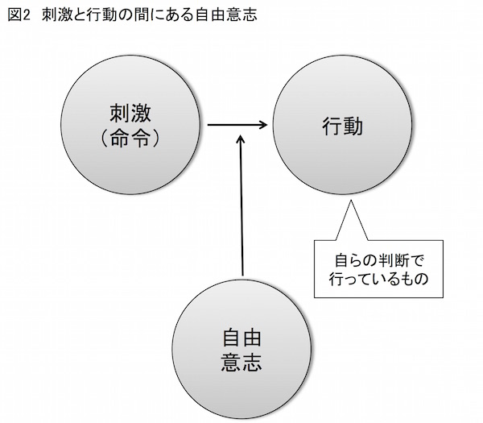

| アドラー心理学による「やる気」のマネジメント: モチベーションを高める7つの手法 (FLoW ePublication) | |
| 中野明 | |
| (2016) | |
本書はアルテより出版した『アドラー心理学による「やる気」のマネジメント』を電子書籍にしたものです。
なお、ご覧になるデバイスにより、図の見え方が異なる場合があります。デバイスに合わせて表示サイズを調整してください。
表紙・中トビラ：メトロポリタン美術館所蔵,Vincent van Gogh作「Wheat Field with Cypresses」 CC0
皆さんの友人や知り合い、同僚、取引先の人たちを頭に思い浮かべてみてください。きっとその中には何人か、とても「やる気」にあふれている人がいるに違いありません。
「どうしてあの人はあんなにやる気があるのだろう？」
そうした人を見たり、思い出したりすると、こんな疑問が頭をよぎります。
そして、「自分もあの人みたいにやる気を持ちたい──」と、考えるのが普通でしょう。
やる気を生み出す力とは、天性のものなのでしょうか。
たぶん違います。
やる気を生み出す力とは、天性のものではなく、訓練して身につけるものです。そしてその有力な方法をとりまとめたのが本書です。
タイトルに銘打ったように、本書で紹介する手法は、オーストリア出身でのちにアメリカに帰化した心理学者アルフレッド・アドラーの考え方をベースにしています。
しかしながら紹介する全ての手法がアドラーによって提唱されたわけではありません。
本書には、アドラー以外の著名な心理学者、たとえばエドワード・デシやミハイ・チクセントミハイ、マーティン・セリグマン、タル・ベン・シャハーらが登場します。
また心理学者だけではなく経営学者ピーター・ドラッカー、スティーブン・コヴィー、ジム・コリンズ、ほかにも童話作家ミヒャエル・エンデや経営者松下幸之助、さらに変わったところでは哲学者カール・ヒルティや古代中国の孫子らも登場します。
そして、彼らが提唱したやる気を高める方法や関連する話題を提供しているのが本書にほかなりません。
ただし、いずれにも共通するのは、アドラーが人の心を分析する際に最重要視した「目標」すなわち、
人は目標に向かって生きる──
という、この一語に焦点を合わせている点です。
本書では、アドラーのこの考え方を背景にすえながら、多様な人物の考え方を採用しつつ、いかなる手法を用いれば自分のやる気を高め維持できるのかを考えました。
全体は八章 で構成しています。
第一章 は総論にあたる部分です。全体を俯瞰する意味でもこちらはぜひとも最初に読んでもらいたい個所です。
また、第二章 〜第八章 の七章 は、やる気をマネジメントする具体的方法を「７つの手法」として述べました。
そのキーワードを掲げると、「自分自身」「目標」「時間」「スケジュール」「今・未来」「人生の目標」となります。
しかしこれらがやる気のマネジメントとどう関係するのか──。その点については本文にじっくりとあったってもらえればと思います。
なお、各々の章は基本的に独立した内容になっています。個別に読むこともできますが、順に読み進んでもらう方が、内容をより深く理解してもらえると思います。
本書が、読者皆様の「やる気」を高める一助になれば幸いです。仮にそうなったとしたら、本書における筆者の使命を果たせることでしょう。
「やる気」には種類がある──。
なんてことをいきなり書くと、「えっ？」と思う人もいるに違いありません。そんな人からはこんな疑問が返ってきそうです。
「やる気は、〝ある〟か〝なし〟かであって、種類なんてあるの？」
はい、あります。分類の仕方によっては多くの種類が見出せるかもしれませんが、少なくとも「やる気」には性格の異なるものが３種類あります。
そして、私たちが「やる気」を持つには、この性格の異なる３種類の「やる気」についてまず理解する必要があります。
ここでは異なる３種類の「やる気」について理解を深めてもらうために、「サカキダ君」という人物に登場してもらいましょう。
サカキダ君は社会人３年目のフツーの会社員です。仕事には随分と慣れてきました。でも、慣れたぶんだけ、新人の頃よりも「やる気」のレベルが下がり気味なのがちょっと心配です。
ある日、上司の渡辺課長がサカキダ君をデスクに呼びました。
「サカキダ君、来週の金曜日なんだけど、四菱物産の五島部長と例の件で打ち合わせが入った。キミも時間を空けておいてくれ」
「は、はい。わかりました（げっ、五島部長。苦手なんだよな、あの人）」
「それと、打ち合わせ終わりで食事に行くから、どこか適当な店を予約しておいてくれ」
「は、はい。承知しました（アポとりなんて面倒クセー･･････。うーん、ダメダメ。面倒くさいなんて言っていちゃ）」
「そうだな。どこか座敷で和食にしようか」
「では、銀座あたりで予約しておきます（そうそう、何ごとも前向きに前向きに）」
「うん、頼むよ」
いかがでしょう。サカキダ君は面倒なアポ取りですが、やる気をふるいたたせています。
さて、それから数日後、サカキダ君は、別の部署にいる同期の近藤君から、こんな誘いを受けました。
「よお、サカキダ。再来週の金曜日だけどさぁ、長谷川たちと飲みに行かない」
「えっ、長谷川たちと。ほんと、行く行く（こいつはラッキー。憧れの長谷川さんとご一緒できるぞ！）」
「どこかいい店ないかなぁ。銀座あたりで」
「うーん、そうだな──。ん、あるある。旨いイタメシ屋があるある」
（と言って、スマホで店のホームページを開くサカキダ君）
「ふーん、よさげな店じゃん。んじゃ、４人分、押さえてもらってもいいかな」
「いいとも！」
「じゃ、予約がとれたら長谷川、髙尾、オレあてにＬＩＮＥしてよ」
「了解（うーんこいつは楽しみだ。これを機会に長谷川さんともっとお近づきになるぞ！）」
サカキダ君はいずれの例でもお店のアポ取りをすることになりました。しかし同じアポ取りながら、前者と後者では、サカキダ君の「やる気」に大きな違いがあるようです。
この違いを明確にするために、ここでは「命令と自律のマトリックス」という、なかなか使い勝手のよいツールを利用しましょう（図１参照）。
この「命令と自律のマトリックス」は、私たちが行う活動の「やる気度」を測定する枠組みです。
このマトリックスでは、縦軸に「自律性」、横軸に「命令」をとり、それぞれ「ある」「なし」の基準を設けます。これにより次の４つの象限を持つマトリックスを作れます。
①自律性あり×命令あり......第Ⅰ象限
②自律性あり×命令なし......第Ⅱ象限
③自律性なし×命令あり......第Ⅲ象限
④自律性なし×命令なし......第Ⅳ象限
まず、第Ⅰ象限を見てみましょう。こちらでは、自分以外の人から命令された仕事、お願いされた仕事を、自律的すなわち自発的に実行します。これは一般的に広く見られる、勉強や仕事への取り組み状況と言えるでしょう。
次に第Ⅱ象限です。こらちらに属する活動は、他人からの命令や依頼はまったくなしで、純粋に自らの意思で行います。ですから一般にやる気が高い状態です。このような活動は、成果が上がりやすく、また活動していて快いという特徴があります。
さらに第Ⅲ象限です。こちらは命令された仕事を自律性なしにただ機械的にこなす活動です。やる気満々で仕事に就いたものの、時が経つうちに仕事が面白くなくなり、やがて言われたことを機械的にやっているという人が世の中にはいます。これは、最初第Ⅰ象限にいた人たちが、この第Ⅲ象限に転落したことを意味していると考えてよいでしょう。
最後の第Ⅳ象限はちょっと特殊な状態です。こちらの領域は命令もないし自律性もありません。いわば、人生が無意味に感じられて何もしない状態、と言えそうです。ここにはやる気のかけらも見えません。
このように考えると、やる気がゼロの第Ⅳ象限から、第Ⅲ象限、第Ⅰ象限、第Ⅱ象限と、「逆コの字」を下からたどるように、やる気がアップしていくことがわかります。
では、先に例示したサカキダ君の２つのアポ取りについて、「命令と自律のマトリックス」で考えてみましょう。
最初の事例は接待先のアポ取りでした。サカキダ君は相手が苦手な五島部長のためかアポ取りに引き気味です。しかし何とかやる気をふるいたたせています。
もし、課長から言われたままにアポ取りを実行していたら、それは第Ⅲ象限に属する活動でしょう。やる気はきわめて低い状態です。
しかしサカキダ君は、何事も前向きにと思い直します。つまりサカキダ君は、第Ⅲ象限に位置づけてしまいそうな活動を、何とか第Ⅰ象限に引き上げた、と言えるのではないでしょうか。
次に、近藤君や長谷川さんたちと行く飲み会のアポ取りを考えてみましょう。こちらのアポ取りは近藤君から命令されたものではありません。サカキダ君が自発的に行っている活動です。
しかも、長谷川さんとお近づきになるために、サカキダ君はかなりはりきってアポ取りをしているようです。ですからこのアポ取りは明らかに第Ⅱ象限に属する活動でしょう。
このように同じアポ取りでも、命令や自律性の有無で、やる気の度合いが大きく変わることがわかります。
そして、ここで注目したいのは、まったく同じ活動でも、自らの意思で、第Ⅲ象限に位置づけることも、あるいは第Ⅰ象限や第Ⅱ象限に位置づけることもできるという点です。
では、どうすれば自在にその位置を決められるのか──。
どうやら重要な役目を果たすのが、私たちが持つ「目標」のようなのです。
もう一度、サカキダ君による接待先のアポ取りについて考えてみてください。最初サカキダ君は、アポ取りを面倒くさい作業、第Ⅲ象限の作業だと考えていましたが、これを自らの意思で第Ⅰ象限に引き上げました。
この引き上げの原動力になったのが「何事も前向きにやる」というサカキダ君の信条です。この信条により、外から押しつけられた目標は、「自分ごとの目標」に置き換わりました。つまり、命じられた目標を「他人ごと」ではなく「自分ごと」にすることで、そこに自律性が頭をもたげたことがわかります。
これは第Ⅲ象限に属する活動と第Ⅰ象限に属する活動とを分ける違いと言ってよいでしょう。
心理学用語を用いるならば、第Ⅲ象限の活動は「外発的動機づけ（目標が外から押しつけられる状況）」、第Ⅰ象限の活動は「内発的動機づけ（目標を自ら設定する状況）」に軸足を置くということになります。ここではもう少し柔らかく、前者を「外からの動機づけ」、後者を「内からの動機づけ」と表現しましょう。
「外からの動機づけ」による仕事は、多くの場合、誰しもが何だか嫌々するものです。ですからあまり楽しい活動ではありません。そのため時間は長く感じるし、できればやめてしまいたいとも思うでしょう。結果、いかに手を抜くかばかりを考えるようになります。これが人を後向きにする「外からの動機づけ」による仕事の特徴です。
これに対して「内からの動機づけ」による仕事は、一般にやっていて楽しいものであり、多くの場合充実感も得られます。そのため時間が短く感じます。また楽しいことは当然長続きしますし、新しい試みも工夫することでしょう。
ただし、「内からの動機づけ」には２種類のタイプがあることに留意する必要があります。
１つは命令やルールを丸ごと飲み込んで「自分ごとの目標」にする態度です。この場合、命令やルールは自分の中で消化されていません。そういう意味で、外からの動機づけの影響がまだ色濃く残っている、と言えるかもしれません。
これに対して、命令やルールを自分の中で完全に消化してしまった状態も考えられるでしょう。この場合、ある行動をとる際に、それが事前に命令されたものであったとしても、命令されたという意識は失われているはずです。
言うならば「自分ごとの目標」に基づく活動が、「自分ならではの目標」に基づく活動に置き換わっていると言えるでしょう。
心理学者エドワード・デシによると、前者のケースを「取り込み」、後者を「統合」と呼びます。もちろん、統合した目標のほうが、やる気が高まることは言うまでもありません。
以上からやる気には少なくとも３つの種類があることがわかります。次のとおりです。
①外からの動機づけによるやる気
②内からの動機づけによる消極的なやる気
③内からの動機づけによる積極的なやる気
「①外からの動機づけによるやる気」（言葉が長いので以下略して「外からのやる気」と記します）は、外から押しつけられた目標に従った際のやる気です。
その際に、人のやる気をふるいたたせるために報酬、いわゆる「ニンジン」をぶら下げることがよく行われます。第Ⅲ象限に属する活動では、この「外からのやる気」によって私たちは動かされます。
次に「②内からの動機づけによる消極的なやる気」（略して「内からの消極的なやる気」）では、外からの命令や目標を、自分ごとの目標として丸ごと取り込んだ状態でのやる気です。
第Ⅰ象限に属する活動では、この「内からの消極的なやる気」によって、私たちは自律的に行動するように努めます。
さらに「③内からの動機づけによる積極的なやる気」（略して「内からの積極的なやる気」）は、たとえ外からの動機づけがあったとしても、それを自分なりに消化した状態でのやる気です。この状態では外からの命令や目標は、完全に自分の中に統合されています。
ですから、仮に当初は命令に基づく仕事だったとしても、命令を越えて自らの意思で行動すれば、それは第Ⅱ象限の活動になります。言い換えると、第Ⅱ象限に属する活動では、この「内からの積極的なやる気」によって、私たちは自律的に行動します。
以上からそれぞれの行動の特徴がわかります。
①「外からのやる気」によって動かされる。
②「内からの消極的なやる気」によって自律的に行動するように努める。
③「内からの積極的なやる気」によって自律的に行動する。
このことから、本当に自律的な行動は「内からの積極的なやる気」が欠かせないことがわかります（以下単に「内からのやる気」と表現した場合はこの「内からの積極的なやる気」を指します）。
そして、自分自身が掲げる目標をコントロールすることで、やる気の性格を「外からのやる気」から「内からのやる気」に変えることができるのです。
アルフレッド・アドラーは『個人心理学講義』（２０１２年、アルテ）で、人には目標を追求し達成しようとする欲求がある、と述べました。
また、１つの方向で失敗しても別の方向で成功しようとする欲求がある、とも記しています。
命じられた仕事を、ただ機械的にこなしているとするならば、私たちは人間が持つこの基本的な欲求──目標を追求し達成しようとする欲求を放棄することになります。
しかしながら、「刺激（命令）」に対してとる「行動」が機械的だとしても、両者の間には私たちの「自由意思」が常に存在することを忘れてはいけません（図２参照）。

この考え方を前提にすると、機械的にとった判断も、自らの自由意思で行ったことになります。
人から命じられた仕事を嫌々するのも自由意思による選択です。ですから結果に対する責任は全て私たち自身にあります。実際、「刺激（命令）」と「行動」の間に、この自由意思がなければ、人は本当に機械と変わりがないことになるではありませんか。
ならば、その自由意思に基づいて、私たちは「外からの目標」を「自分ごとの目標」に格上げすることができるはずです。さらに、「自分ごとの目標」を「自分ならではの目標」に高められるはずです。こうすることで、私たちの心の中に「内からのやる気」を燃え上がらせることができるに違いありません。
この「内からのやる気」を燃え上がらせるための具体的な手法を解説するのが、第二章 以下のテーマになります。具体的手法とは次の７つです。
手法① ライバルは「自分自身」だと理解する
手法② 自らの「目標」を自らマネジメントする
手法③ 自分の「強み」に注目する
手法④ 奪われた「時間」を取り戻す
手法⑤ 「スケジュール」から能力を引き出す
手法⑥ 「今」と「未来」を同時に生きる
手法⑦ 「人生の目標」を理解する
以上の手法を駆使して、「内からのやる気」に火をつけましょう。そうすれば、きっと昨日とは違う自分自身を発見できるはずです。
システムキッチンの製造会社が、著名デザイナーを起用したデザイナーズ・キッチンを発表しました。価格は２５０万円です。ところが満を持して投入したこの商品がさっぱり売れません。
そこで担当者は考えました。まず、先発の商品からデザインを若干変更し、機能をやや高めた製品を開発しました。そして、先発の商品をＡタイプ、後発の商品をＢタイプとして価格も３００万円と高価に設定しました。
するとどうでしょう。いままでまったく売れなかった２５０万円のデザイナーズ・キッチンＡタイプに買い手がつくようになったではありませんか。
この結果をどう説明すべきでしょう──。
そもそも、一般的なユーザーはシステムキッチンの相場など知らないのが普通でしょう。そのような人が、著名デザイナーによるシステムキッチンの価格が２５０万円だと言われても、相場どおりなのか買い得なのか、あるいはべらぼうに高いのか、にわかには判断できません。
ところがその隣に同じデザイナーによる３００万円のデザイナーズ・キッチンＢタイプがあったとしたらどうでしょう。
Ｂタイプの登場により、ユーザーはＡタイプの価値を相対的に判断できるようになります。そして２５０万円という価格は、３００万円に比べると、それほど高くない、むしろデザインや機能を見較べると割安感があると感じるかもしれません（実際そうでしょう。Ｂタイプはデザインを少し変えて若干機能を高めただけですから）。こうして２５０万円のＡタイプに買い手がつくようになった、と考えてもよいでしょう。
ちなみに、Ｂタイプのような商品をシステムキッチン業界にかかわらず一般に「おとり」と呼んでいます。
そう、私たち消費者は、いつもこのように「カモ」にされているのです！
それはともかく、このように私たちは、何かの価値を判断する際に、何か別のものと比較する習慣を持ちます。そして私たちは、この習慣を自分自身の価値を判断する際にも用います。
この場合、自分自身の価値を決める尺度はたいていが「他人」です。
たとえば私たちは、会社の同僚やクラスの同級生と比較することで、自分の能力の相対的位置を特定します。そして、相手と比較した位置の高低により、私たちは一喜一憂します。
しかし比較対象を他人に求めていると、私たちは他人に嫉妬したり、心理的に不安定な状態になったりします。
なぜ、そうなるのか──。
この理由を知るには、私たちが関心とする対象には３つの領域があり、それぞれに特徴があることを理解しなければなりません。
仕事や勉強、スポーツなど私たちはいろいろなものに関心を持ちます。これらの関心対象にはおしなべて３つの領域があります。この３つの領域がどのようなものなのか、次のようにイメージしてみてください。
まず、関心対象という大きな円を描きます。そうしたらその円に、それよりも小さな同心円を重ねてください。これにより、私たちの関心対象は、小さな同心円内の領域と、大きな円から小さな同心円を除いた領域の２つに分かれました。
そもそも関心の対象には、自分の力でコントロールできるものと、自分の力ではコントロールできないものとがあります。
たとえば、サッカーを関心の対象とするアマチュア・サッカー選手の場合、明日の試合の天候をコントロールすることはできません。つまり天候は彼にコントロールできない要因です。
審判のジャッジもそうでしょう。審判がルールに従ってジャッジするのは当然のことです。しかし細部ではブレが出るかもしれませんし、審判固有のクセがあるかもしれません。
これらの要因が自分たちのチームに有利に働くか不利に働くかは、実際にフタを開けてみないことにはわかりません。
あるいは、以前に失敗したＰＫは過去の出来事です。今さらやり直しはききません。だからくよくよしていても仕方がありません。過ぎ去った出来事も自分でコントロールできない要因です。
もちろんその一方で、彼が自分でコントロールできる要因も当然存在します。たとえばコーナーキックの技術を向上させることは「自分ごと」です。自ら訓練を課して上達するしか道はありません。他のメンバーの練習が、自分の技術向上に役立つことはあり得ません。
ドリブルの技術や持久力の向上、フェイントのコツ、これらはいずれも自ら練習を課さなければ上達は望めないでしょう。
いずれも自分でコントロールできる要因です。
以上からわかるように、人の関心対象には、自分でコントロールできるものとできないものとがあります。したがって同心の大小２つの円は、大きい円が関心対象であり、小さい円はその関心対象のうち自分でコントロールできる要因を意味します。
そして、大きい円から小さい円を取り除いた領域に、自分ではコントロールできない要因が属するわけです（図３参照）。
このコントロールできる領域とコントロールできない領域は、「自分ごとの領域」と「他人ごとの領域」と言い換えることも可能でしょう。
自分と自分以外の人々をイメージしてください。たとえば、会社の同僚やクラスの同級生、チームのメンバーといった人々です。
この時、私以外の人の努力というものは、その人自身がすることです。私自身がコントロールできるものではありません。
その結果として、他の人が高い成果を上げたとしたら、それはその人の努力に帰すべきものです。私が関与できるものではありません。もちろんコントロールもできません。
ところがしばしば私たちは、同僚や同級生、メンバーの成果に対して激しい嫉妬を覚えます。自分の成果に比べて、同僚や同級生、他のメンバーは、何と高い成果を手にしたことか、と。
また、彼らの成果に比較すると、自分が手にした成果の小ささにうんざりします。こうして自分のふがいなさを呪うとともに、自分への嫌悪感が生じます。
このような嫉妬や自己嫌悪は、自分と他人を比較することから生まれます。しかし、いくら他人をうらやんだところで、その人の努力をコントロールすることはできません。それは自分でコントロールできない領域に属する要因だからです。
にもかかわらず、私たちは自分と他人を比較し続け、嫉妬や不安、イライラ感、自分に対する自信の喪失やさらには絶望感すら味わいます。
しかし、自分にコントロールできない領域に属する要因に思い悩んでいても、自分ではどうしようもできないのですから、実はまったく無駄な行為なわけです。
こんな無駄なことに、イライラしたり、不安になったりして、貴重な時間とエネルギーを消費するのは愚の骨頂です。
では、心の平静を取り戻すにはどうすべきでしょう。
方法は意外に簡単です。生産性のない、他人と自分との比較は、きっぱりやめることです。
その上で、競争相手は自分自身だと定義しましょう。そして、昨日の自分と今日の自分、さらに今日の自分と明日の自分を比較します。
より具体的に言うと、他人相手ではなく、昨日の自分に対する今日の自分の成長、今日の自分に対する明日の自分の成長、この競争を自分の中で繰り広げます。
他人の成長は自分がコントロールできない領域に属します。しかし、自己の成長は自分がコントロールできる領域に属します。「他人ごと」ではなく「自分ごと」です。
競争に勝つも負けるも自分次第です。仮に自分に負けたとしても、自分に嫉妬を感じることはあり得ないでしょう。その時に、強い反省とともに生じるのは、昨日よりも素晴らしい自分、今日よりも成長した自分になろうという強い意欲、すなわち「内からのやる気」にほかなりません。
いまから約２５００年に成立した中国の古典『孫子』は、戦の仕方である「兵法」について述べたものです。この『孫子』の「形篇」にこんなくだりがあります。
孫 子 曰 わく、昔 のよく戦 うものは、先 ず勝 つべからざるをなし、もって敵 の勝 つべきを待 つ。勝 つべからざるは己 に在 り、勝 つべきは敵 に在 る。ゆえによく戦 うものは、よく勝 つべからざるをなす。敵 をしてこれに勝 つべからしむることあたわず。
「勝つべからざる」「勝つべき」など、ちょっと紛らわしい表現が続きますね。では、現代語に訳してみましょう。
孫子は言った。
昔の強者は、まず敵に負けない態勢を整え、そのあとで敵に勝てるチャンスを待った。
そもそも、敵に負けない態勢の構築は自身の問題であり、敵がスキを作るのは敵の問題である。
だから強者は自身の問題である敵に負けない態勢を築く。いくら強者といえども、敵に負けない
態勢は作れるけれど、敵に自ら負ける態勢を作らせることはできない。
中野明『今日から即使える「孫子」の兵法』（２０１１年、朝日新聞出版）
孫子は右に記したように、「敵に負けない態勢の構築は自身の問題」であり、「敵に自ら負ける態勢を作らせることはできない」と鋭く説きました。
つまり孫子は「敵に負けない態勢の構築」は「自分ごと」であり、自分でコントロールできる問題だと言うわけです。
これに対して「敵がスキを作る」ということは「他人ごと」であり、自分ではコントロールできません。そのため「敵に自ら負ける態勢を作らせることはできない」と、孫子は言うわけです。
いかがでしょう。
すでに中国では２５００年も前から、自分でコントロールできない問題に思いわずらうのは無意味であることを指摘しています。
その上で、敵に負けないためには、自らコントロールできる問題に焦点を合わせるしかない、と主張しているわけです。
しかし中国の先人の慧眼には、まったくもって驚かされるばかりです。
自分の関心対象には、自分でコントロールできる領域と、自分ではコントロールできない領域があることがわかりました。
そして、自分でコントロールできない領域ではなく、自分でコントロールできる領域に焦点を合わせることが重要になることもわかりました。
これは言い換えると、自分自身をライバルとして自覚して、昨日の自分よりも今日の自分の成長、今日の自分よりも明日の自分の成長に焦点を合わせよ、ということです。
その際に、成長の基準をどの程度にするかが問題になるでしょう。
自分に対して厳しい人は成長の度合いを高く設定するに違いありません。一方で、自分に対して甘い人はそれほど高い水準を設けないでしょう。場合によっては現状維持で満足する人もいるかもしれません。
こうして自分でコントロールできる領域は２つに分裂します。
１つは自分の成長をそれほど求めない領域です。この領域に自分を留め置くと、買ってでも苦労する必要はないので、きっと快適に違いありません。ですからこの領域を「快適ゾーン」と呼ぶことができるでしょう。
イメージを具体化するために、先に示した２つの同心円の、自分でコントロールできる領域を示す円に、それよりも小さい同心円をさらに重ね合わせてください。
これで３つの同心円が完成しました。この自分でコントロールできる領域に含まれた一番小さい円が「快適ゾーン」にほかなりません。
これに対して、昨日よりも今日の成長、今日よりも明日の成長を目指す領域が存在します。この領域では常に自分を高めることが欠かせません。
そこでこの領域を「研鑽けんさんゾーン」と呼びましょう。研鑽ゾーンとは、自分でコントロールできる領域から快適ゾーンを除いた領域です。
こうして私たちが関心を持つ対象には３つの領域ができました。
①自分でコントロールできない領域
②自分でコントロールできる領域の「研鑽ゾーン」
③自分でコントロールできる領域の「快適ゾーン」
これを「関心対象の３つの領域」と呼びましょう（図４参照）。そして私たちが焦点を合わせるのは、自分でコントロールできない領域ではありません。また、自分でコントロールできる領域であっても快適ゾーンではありません。
真に注目すべきは、自分でコントロールできる領域に含まれた研鑽ゾーンにほかなりません。
そもそも、快適ゾーンに安住していては、人間の成長は期待できません。と言いますか、快適ゾーンでの安住は危険でもあります。悪玉としての劣等コンプレックスが猛威をふるう恐れがあるからです。
この点についてふれるには、まず、アルフレッド・アドラーが注目した「劣等感」について説明しておく必要があるでしょう。アドラーは次のように述べました。
人間であることは劣等感を持つことである。
アルフレッド・アドラー著、岸見一郎訳『生きる意味を求めて』
（２００７年、アルテ）
人は自分が持つ器官や特徴、行動を他の人と比較し、劣っていると判断することがあります。こうした、自分が持つ「劣等性」に対して、負い目や恥を感じることで、私たちには「劣等感」が生じます。
たとえば、私たち人類が共同体を形成する動物である点に注目してください。
私たちは他の動物に比べると、強大な力を持っているわけでもなく、飛び抜けた運動能力を持っているわけでもありません。
そこで私たちは、こうした生物学的劣等性を補うために共同体を形成するようになりました。家族や組織、社会も共同体です。これらの源をたどれば、いずれも劣等感に行き着くわけです。
劣等感はこれ以外にも多様なものを生み出しました。
人類が防御や攻撃のために用いた道具、体力の代わりに発達させた知性、仲間と意思を伝え合うための言葉、これらも人が持つ劣等感が大きな原動力となっています。
さらに宇宙から見ると芥子粒のような存在である人間は、その劣等感から宗教や哲学、芸術を生み出したとも言えるでしょう。
そのためアドラーは、「実際、私には、われわれ人間すべての文化は、劣等感情に基づいているとさえ思われる」（アルフレッド・アドラー『人生の意味の心理学』）と述べたほどです。
さらに劣等感は個人の成長にも欠かせません。私たちは自分が持つ劣等性を他人に見せないようにするために自分を改善します。それは自分自身を「マイナスに感じる」状態から「プラスに感じる」状態へ変えようとする努力です。アドラーはこのような行為を劣等感に対する「補償」と表現しました。
たとえば、走るのが遅い子どもが、水泳では速く泳げる自分を発見したとしましょう。この子どもは走る遅さを補償するために、もっと速く泳ごうと努力するかもしれません。
このように、劣等感の補償を自分が持つ研鑽ゾーンで行うと、人は特定の分野で大きく成長する可能性が高まります。しかも一般にどの程度補償すれば、自分の劣等性を完全に隠せるのかがわかりません。そのため人は過剰に劣等感を補償します。
アドラーはこれを「過補償」と呼びました。私たちの周囲を見渡すと、この過補償が大きな成果と結びついている場合が多々あります。
先に、人は自分の能力を判断する際に他人を基準にすると書きました。そして、自分の成果が他人より劣っていると、嫌悪感が生じ、このパワーが強烈になると劣等感に発展します。
しかし私たちがこの劣等感を、マイナスからプラスの方向へコントロールすることができたならば、それはきわめて健全なことです。
この場合、他人との比較から生じた劣等感が、私たち自身の能力を改善する方向、より高める方向に作用します。これが過補償と結びつくと私たちは飛躍的に成長するに違いありません。
ですから、劣等感のパワーをプラスの方向に自分の意思で向けられる自信があるのなら、自分と他人を比較しても構いません。むしろ好影響を得られるでしょう。
しかしこの劣等感は、しばし私たちをマイナスの方向に突き動かすことをよく理解しておかなければなりません。先に見た他人に対する激しい嫉妬や、自分に対するイライラ感は、劣等感の補償がプラスではなくマイナスの方向に作用した場合に生まれます。
このようにマイナス方向に作用する強い補償を「劣等コンプレックス」と呼びます。
たとえば、自分の劣等性を他人にみせるのが嫌なあまり、外出を控えるようになったとしましょう。いわゆる引きこもりです。
人前に出なければ、人から笑われることもありません。だから自分も傷つきません。これは先に見た快適ゾーンから一歩も足を踏み出さない状況と言えるでしょう。
劣等コンプレックスのため快適ゾーンから一歩も外に出ない──というのは、ちょっと極端な例かもしれません。しかし快適ゾーンにいれば、肉体的にも心理的にも大きな負担がかかりません。
だから私たちはとかく快適ゾーンに安住しがちです。しかしこれは言い換えると人間的な成長を棚上げしているのであって、長い目で見るとまったく健全なことではありません。
また、研鑽ゾーンにいるつもりでも、補償のための努力の方向が、プラスではなくマイナスの方向に向いているケースが多々あります。
そもそも劣等感を補償するために何かで秀でるには多大な時間と努力を要します。たとえば、走るのが遅い子が、水泳で速く泳ごうと思えば、たゆまぬ努力が欠かせません。これはなかなか辛い作業です。
しかし、こうした辛さを回避して短時間で自分の存在を社会に認めさせたいという欲求が生まれこともあるでしょう。
たとえば、社会の中で重要な地位を占められない人は、自分の重要性をアピールしたいがために大きな自動車に乗るかもしれません。
あるいは、自分の力が他人により劣っていると感じている人は、自分の強さを誇示したいがために、大きくてどう猛な犬を飼うかもしれません。
このように、自分が実際には優れていないにもかかわらず、優れているかのように見せる態度を「優越コンプレックス」と呼びます。
劣等感を過剰に意識すると劣等コンプレックスが頭をもたげます。劣等コンプレックスを持った人が困難から逃れるために用いる方法の１つが、この優越コンプレックスにほかなりません。
この優越コンプレックスの無意味さを説いた「竹馬男」という話があります。
あるところに気位の高い男がいました。この男は背が低いのが悩みの種でした。そこで男は自分の背を高くしようと、いつも竹馬に乗るようになりました。
竹馬をはいて街に出た男は、高い所から人々を見おろしました。
「どうだい。ボクの背はとっても高いだろ」
これを見たある人が言いました。
「でも、竹馬をはいたままでは電車に乗れないだろ」
気位の高い男はこんな批判にめげません。必死の訓練をして竹馬をはいたまま電車に乗れるようになりました。
するとこれを見た別の人がいいました。
「でも、竹馬をはいたままレストランに行くのは難しいだろ」
気位の高い男はこんな批判にもめげません。やはり血のにじむような努力をして、竹馬をはいたままレストランで食事ができるようになりました。
竹馬男は自慢顔です。
これを見た人々は、「やれやれ」と顔を見合わせたといいます──。
いかがでしょう。竹馬男は優越コンプレックスにからめとられて、自分の努力を傾けるべき正しい方向を見失ったのがわかると思います。
優越コンプレックスで注意したいのは、本人は自分を成長させるために研鑽しているのだ、と感じている点です。これは快適ゾーンではなく研鑽ゾーンに自分の身を置いていることを意味します。
しかし、仮に研鑽ゾーンに焦点を合わせていたとしても、努力すべき方向がプラスではなくマイナスの方向に向いているのならば、適切な効果など望むべくもありません。
では、プラスの方向、正しい方向とは、具体的にどちらを向いているのでしょうか。これは、右で掲げたマイナス方向に向いた活動の共通点を考えると明らかになります。
・快適ゾーンから外に一歩も踏み出さない。
・自分の重要性をアピールするために大きな自動車に乗る。
・強さを誇示するために大きくてどう猛な犬を飼う。
・身長の低さを隠すために竹馬に乗る。
これらの事例に共通する要因とは何でしょう。そう、いずれの場合も、自己の利益のみを追求しているのがわかると思います。
では、この自己利益の追求がマイナス方向だと考えてください。ならばプラスの方向とは？
自己利益の反対、つまり共同体である社会の利益に寄与する、ということです。
劣等感が生み出した道具や言葉を思い出してください。人は速く走れないから電車や自動車を発明しました。遠くにいる人に自分の意思を伝えたいから電話やインターネットを作り出しました。
いずれも共同体である社会の利益に貢献しているのがわかります。
そして私たちは、社会の利益に寄与貢献することで、その見返りとして「ありがとう」という言葉と一緒に報酬すなわちお金を受け取ります。
不思議なものですね。優越コンプレックスのように自己利益を追求する活動が自己利益に結び付かず、自己利益に結び付かないような社会利益の追求が、結果的に自己利益をもたらします。
これは世の中を動かす原理原則とも言えるでしょう。
にもかかわらず私たちはこの原理原則を忘れて自己の利益のみを追求しがちです。さらに悪いことには、優越コンプレックスにからめとられて、単なる自己満足で終わる活動にふけることも、ままあります。
しかし、ごまかしの優越を表現するのにも相当のパワーが必要です。ならばこのパワーを正の方向に使えば人生はもっと楽になると思いませんか。
自分のコントロールできない領域でもない、また快適ゾーンでもない、研鑽ゾーンに身を置いて正しい方向で自分の能力を高めること。
これが自分を成長させるための基本になります。
そして、自分を最大のライバルと位置づけて、昨日の自分よりも今日の自分の成長、今日の自分よりも明日の自分の成長を目指します。
その際に「昨日の自分より０・１％成長すること」を目指してはどうでしょう。
たったの０・１％！──。と、思うかもしれません。しかし、このたったの０・１％には、はかりしれないパワーが秘められています。その証拠を示しましょう。
今日の私の能力を「１００」だと仮定します。０・１％成長を前提にすると、明日の私の能力は１００・１になります。０・１％成長は複利ですから、明後日の私の能力は「１００・２００１」になるでしょう。３日後だと「１００・３００３」になります。
では、１年後（３６５日後）の私の能力はどの程度になっているか──。ちょっと予想してみてください。
答えは「１４４・０２５１」です。概算すると１５０ですね。つまり毎日０・１％成長を続ければ、私の能力は１年後に現在の１・５倍になるわけです。
では、これが２年後になるとどうなるでしょう。その値は「２０７・４３２４」にまで膨らみます。概算すると２・１倍です。
さらに０・１％成長を続けましょう。３年後には「２９８・７５４８」と、最初から見るとほぼ３倍の能力に拡大することがわかります。
ここまでくれば５年後も見たくなりますね。その値は「６１９・７１４１」と、もともと１００だった私の能力は６倍以上に成長します。概算で一覧にすると次のとおりです。
１年後......１・５倍
２年後......２・１倍
３年後......３・０倍
４年後......４・３倍
５年後......６・２倍
どうです、驚きだと思いませんか。
自分をライバルだと思って０・１％成長を目指すだけで、これだけの成長が期待できます。注目すべきは、０・１％成長の目標に、自分と他人の比較はまったく関与していないという点です。
ライバルはまさに自分自身です。孫子の言葉を思い出してください。
よく戦 うものは、よく勝 つべからざるをなす（強者は自身の問題である敵に負けない態勢を築く）。
このような域に達すれば、他人の能力や成果に嫉妬したり不安を感じたりすることもありません。むしろ自分が成長することで、仲間の成長にも心から賞讃を送れるようになるはずです。
ライバルは他人ではなく自分自身であると理解すること、これが「内からのやる気」に火をつける第１歩だと考えてください。
ルイス・キャロルの傑作『不思議の国のアリス』を読んだという人は多いに違いありません。この物語の中で、アリスが森で出会ったチェシャ猫に道を尋ねる場面があります。
「ちょっとお尋ねしたいの。私はここからどっちに歩いて行けばいいかしら？」
「それは、あんたの行きたいところによるだろう」。猫は言った。
「どこだってかまわないのだけど──」。アリスは言った。
「それなら、どこに行こうがかまわないじゃないか」。猫は言った。
「どこかに着けさえすればね」。アリスは付け加えた。
「そりゃどこかには着くだろう」。猫は言った。「ずっと歩きさえすればな」
Lewis Carroll『Alice's Adventures in Wonderland & Through the Looking-Glass』（2000, A Signet Classic）
不思議の国に迷い込んだアリスは、自分の行くべき場所がわかりません。しかし、どこに行きたいのかアリス本人がわかっていないのですから、なるほど、チェシャ猫の言うとおりですね。これだと目的地の方向を指し示すことはできません。
ところで前章では０・１％成長に関する話をしました。「よし、ワタシも０・１％成長するぞ！」と、考えた途端、ふと立ち止まってしまった人もいるはずです。
そのような人はおそらく、具体的にどの分野で０・１％成長すればいいのかわからずに、戸惑ってしまったのに違いありません。
そう、目標の不在です。
第一章 で述べたように、人は本来、目標を達成するという欲求を持った存在です。そして、自分自身の目標を明確にすることで、一歩を踏み出すべき方向が明らかになります。
そのため目標は、私たちの内面からやる気を生み出す、きわめて力強い原動力となります。目標なくしてやる気を生み出すのは不可能とさえ言っても言い過ぎではないでしょう。
しかし私たちは、あのアリスと同様に、ときに自分の目標を見失うことがあります。
アリ（蟻）には通り道に残した足跡フェロモンをたどって歩くという習性があります。この足跡フェロモンは、いわば目標への道しるべといえるでしょう。
この足跡フェロモンを故意に消してしまうと、アリは道に迷ってしまいます。これはアリが目標を見失った状態だと言えます。
また、前章で見た竹馬男のように、目標が明確なのにそれが適切でない場合もあります。再びアリの習性にたとえると、アリは何らかの理由で円を描くように行進すると、足跡フェロモンの跡を追うために、延々と同じ場所を歩き続けるそうです。
これをアリのデス・スパイラルと呼びます。アリのデス・スパイラルは、適切でない目標が私たちに及ぼす甚大な被害を象徴している、と言えるように思います。
自分の目標がわからない。知らない間に不適切な目標を掲げている──。
前者の場合、適切な目標を明確にする必要があります。また後者の場合、自分の掲げる目標が不適切だと理解した上で、新しい適切な目標を掲げることが不可欠となります。
アドラーはこのように言いました。
われわれが改善できるのは、具体的な目標である。目標を変えることで、神経症者の習慣と態度も変わるだろう。もはや古い習慣と態度を必要としない。そして、彼〔女〕の新しい目標に適した新しい習慣と態度がすぐに取って代わるだろう。
アルフレッド・アドラー著、岸見一郎訳『人生の意味の心理学（上）』
（２０１０年、アルテ）
そもそも私たちが持つ目標は創造力のたまもの、いわば「虚構」です。形のないきわめてもろいものです。
しかし虚構には大きなパワーが秘められています。
家屋の建設を思い立ったと考えてみてください。いきなり柱を立てる人はまずいないでしょう。最初はどんな家に住みたいかイメージするはずです。さらにそのイメージをパースや設計図に落とし込むことでしょう。
注意したいのは、頭の中のイメージ、あるいはパースや設計図だけでは、本物の家はまだ現実のものになっていません。これって虚構ですよね。
しかし現実の家屋を手に入れようとすると、初めにこの虚構がどうしても必要になります。
私たち人間についても同様です。
５年後、10 年後における理想の自分をイメージしてください。いわば自分自身に対するビジョンですね（詳しくは第八章 参照）。
このビジョンは虚構です。しかし虚構であるこのビジョンを目標にすることで、私たちは理想の自分自身に近づけます。
ですから、０・１％成長を目指そうとするならば、同時にそのゴールを明瞭にすべきです。５年後、10 年後の理想の自分を鮮やかにイメージすべきです。
５年後、今の６倍以上もの能力を持つ自分自身とは、どのような姿をしているのでしょうか。
10 年後、今の38 倍（計算ではこうなります！）の能力を持つ自分自身とは、どのような姿をしているのでしょうか。
以上について考えて明確なビジョンを描いてください。そしてこのビジョンを目標すなわちゴールと考えて、０・１％成長を実行してください。
とはいえ、こんな声が聞こえてきそうです。
「そのビジョンをイメージできないから困っているのだ──」
なるほど。では、ビジョン作りのためのお勧めの方法を紹介しましょう。
そもそも目標には、短期目標、中期目標、長期目標というように、期限によって長短が存在します。５年後や10 年後の目標は、どちらかというと中長期的な目標と言えるでしょう。
一方、短期の目標とは明日や１週間の目標、あるいは四半期の目標などがそれに相当します。
本来、こうした短期の目標は中期の目標と結び付いたものであるべきです。あるいは中期目標を分化したものが短期目標だとも言えるでしょう。このようなことを考えると中期目標も本来は長期目標に準じているべきです。
ならば、私たち個人が持つ最も長期の目標とはどのようなものなのでしょうか。
これに答えるには、「メメント・モリ」がきわめて重要になります。メメント・モリとは「死を想え」というラテン語で中世のキリスト教世界で用いられた言葉です。
メメント・モリすなわち自分が死んだ時をイメージしてみてください。祭壇には私の写真が飾られています。葬儀には家族や友人、同僚らが多数参列してくれました。私は彼らの背を葬儀場の一番後ろから見ています。
やがて参列者らが順にマイクの前に立ち弔辞を読み始めました。その弔辞には生前の私のことが述べられています。
さて、私は彼らの弔辞の中で、どのような人物として描かれたいでしょうか。勇敢な人物、それとも家族に優しい人物、あるいは懸命に仕事をした人物──。
描いてもらいたい姿は人によって様々でしょう。
そして、少々物騒ではありますが、この弔辞の中で語られる自分の姿こそが、自分にとって最も長期の目標、最も長期のビジョンということになります。
ぜひともメメント・モリを実行してみてください。
達成したい自分自身とはどのような姿をしているのでしょうか──。
その効果は抜群です。
目標を見失った人に明確な目標を与えてくれます。
不適切な目標を設定している人に、適切な目標を示してくれます。
また、長期目標を内に秘めていれば途中で道に迷っても安心です。
仮に迷子になったとしたら『不思議の国のアリス』に登場するチェシャ猫に道を尋ねてみましょう。私たちは行きたい先を知っているのですから、あの猫はきっと正しい方向を指し示してくれるに違いありません。
次に長期目標よりも期間の短い目標について考えてみましょう。
自分自身の長期目標を、他人から無理強いされることは、平和で安全な世の中では起こりにくいことです。
しかしながら、たとえ平和な世の中であっても、目標の期間が短くなるに従って、自分以外の人から目標を与えられる（あるいは押しつけられる）ことがあります。
たとえば、小学校３年生の子どもに、中学入試を目指させるのは、子どもからすると親という自分以外の人から目標を与えられたことになります。
またあるいは、会社勤めをしている人が、上司から営業ノルマを課せられることもあるでしょう。これも自分以外の人から与えられた目標になります。
とはいえ、子どもの場合は別にして、分別ある人に本人以外が目標を無理強いすることはできるのでしょうか。
ここで思い出したいのが、「刺激（命令あるいは他人から強いられた目標）」と「行動」の間に存在する、その人の「自由意思」についてです（第一章 参照）。
そもそも人が、命令に従って単に行動しているとすれば、それは機械と変わりません。しかし、積極的か消極的かは別にして、私たちは刺激に対して何らかの判断を下して、自分の意思に基づいて行動を起こすものでした。
この考え方を適用すると、仮に目標が自分以外の人から無理強いされたものだったとしても、それを自らの目標として採用するのは、その人の判断以外の何ものでもありません。
つまり分別ある人にとって、よほどのことがない限り、強いられた目標は存在しないことになります。あらゆる目標は自らの判断で掲げたものです。もちろん、その目標に向けた活動も、自らの判断の上で行ったものと言えます。
それならば、意思の持ちようによって、同じ行動でも、他人からやらされているとも、自分から進んでやっているとも、いかようにも判断できるはずです。
それを決めるのは、そう、自分自身にほかなりません。
アメリカの小説家マーク・トゥエインの作品『トム・ソーヤーの冒険』（１９４６年、岩波書店）の著名な場面（たぶん皆さんもご存知の場面）では、同じ活動でも「他人からやらされていること」と「自分で進んでやっていること」の違いを印象的に示しています。
ある日トムは、ポリーおばさんの家の塀をペンキで塗るという、遊び盛りの子どもにとっては耐えられないほど退屈な仕事を命じられました。
トムは意気消沈して仕事にとりかかります。するとその時、トムに素晴らしいアイデアが浮かびました。嫌々ペンキを塗るのではなく、芸術家のようにペンキを塗って、友だちをうらやましがらせようとしたのです。
そこへ友だちのベンが通りかかりました。ベンはトムを見るとニヤリとして言いました。
「やぁ、トム。ペンキ塗りかい。ははぁん、仕事を言いつけられたんだな」
ところがトムはベンの言葉に戸惑ったふりをしながら言います。
「えっ、仕事って、何のことだ。これはポリーおばさんが大事にしている塀だぞ。それにペンキを塗れるなんて、こんな機会が毎日あると思うかい」
と、トムは言いながら慎重にペンキを塗ります。その姿を見たベンはペンキを塗りたくなってきました。しかし、トムは断ります。するとベンは余計塗りたくなります。とうとうトムは、リンゴと交換するという条件で、初めてベンにペンキを塗らせてやります。
その後、何人か通りかかった別の友だちも、楽しそうに仕事をするトムに騙され、トムの代わりにペンキを塗るのでした──。
いかがでしょう。私たちが会社で行う多くの仕事は、上司に命令されたり、部下に指示したりするものです。
一方トムは、こうした仕事を「他人からやらされていること」から「自分で進んでやっていること」に転換しました。塀にペンキを塗るという目標を、他人から押しつけられたのではなく、自ら設定した目標に転換しました。
その効果は的面で、あの退屈だったペンキ塗りが、友だちもうらやむ仕事に変わったのです。
すでに見たように、自分以外の人から与えられた目標も、最終的に自らの判断で、自らの目標として掲げるものです。
ならば、トム・ソーヤーが実行したように、自分以外から与えられた目標でも、自分自身が掲げた目標として積極的に取り組むことが欠かせません。
別の言い方をすると、「他人からやらされていること」とは、「外発的動機づけによるやる気」つまり「外からのやる気」をベースにしています。これに対して「自分で進んでやっていること」とは、「内発的動機づけ」に基づく「内からのやる気」による活動です。
つまりトムは、目標を自らの意思によって掲げることで、「外からのやる気」に基づく仕事を、「内からのやる気」に基づく仕事に置き換えたのです。そして友だちもうらやむ仕事に変えることに成功しました。
「外からのやる気」による仕事の特徴を思い出してください。このような仕事は嫌々するのが一般的です。これでは楽しいはずがありません。
そのため仕事時間は長く感じられます。退屈ですからできればやめてしまいたいと思うでしょう。しかし簡単にやめられない場合、いかに手を抜くかを考えます。
一方で、「内からのやる気」による仕事では、活動そのものが自分にとって価値あるものです。やっていて楽しめるもの、充実感を得られものでしょう。そのため仕事時間は短く感じられます。また長期でも続けられます。面白いからいろいろ工夫も凝らしたくなるでしょう。
このような仕事に従事していたら、身も心も充実すると思いませんか。
そしてトムの事例から、「外からのやる気」による仕事を、「内からのやる気」による仕事に転換することが、仕事の中身を変えるのではないことがわかります。要するに私たちの心の持ち方次第です。
その際の適切な心の持ち方とは、外から与えられた目標であれ、自分自身が自発的に取り入れたものであることを改めて理解すること──。言い換えると、
目標を自らの意思で設定すること──。
「外からのやる気」による仕事を「内からのやる気」による仕事に転換する魔法は、この一言に尽きると思います。
もっとも「外からのやる気」を「内からのやる気」に転換する目標の設定には、ちょっとしたコツがあります。
１つは与えられた目標があったとしたら、それを越える自分オリジナルの目標を掲げることです。どういうことか先のトムの事例で説明しましょう。
トムは塀をペンキで塗るように命じられました。仮にこの時トムが、ペンキを塗るだけではなく、塀回りの掃除も自分の仕事だととらえたらどうなるでしょう。
トムが命じられたのはペンキで塀を塗ることです。ですから、塀回りの掃除は命じられた目標を越える目標です。
トムがやり終えた仕事を見た時、ポリーおばさんは大感激するに違いありません。何せ自分が命じた以上の仕事をトムがやってくれたからです。
大事なのは、命じられた目標を越えた目標を自ら設定した時、それはもはや命じられた目標ではなくなる、という点です。これは明らかに自らの意思で設定した目標にほかなりません。その結果、自律性がにわかに目を覚まします。
そして「外からのやる気」による仕事が「内からのやる気」による仕事に早変わりして、先に述べた多様なメリットを手にすることができます。
もっとも、トムは塀回りの掃除を追加目標にしたわけではありませんよね。これは想像の話です。しかしトムは、塀回りの掃除とは別の、自分オリジナルの目標を設けた点に注目すべきです。
トムは塀をペンキで塗るように命じられました。この命じられた目標に加えて、トムはペンキ塗りを友だちに押しつけるという大胆な目標を立てたと考えてみてください（あまりほめられたことではないのですが！）。
その途端、トムにとって「外からのやる気」による仕事だったペンキ塗りが、とっても面白くてワクワクする仕事、つまり「内からのやる気」による仕事に早変わりしたわけです。
しかもまんまと友だちにペンキ塗りをやらせるばかりか、報酬までせしめたのですから、トムの満足度はとっても高かったに違いありません。
では、トムのとった行動を、第一章 で紹介した「命令と自律のマトリックス」を用いて考えてみましょう。
トムが命じられたペンキ塗りは、当初、「自律性なし×命令あり」の領域である第Ⅲ象限にありました。
しかしトムは、ペンキを塗るという目標を、命じられた目標ではなく、自発的な目標として置き換える努力をしました。これはトムにとってのペンキ塗りという仕事が、「自律性あり×命令あり」を示す第Ⅰ象限に移動することを意味します。
さらに興味深いのは、トムが設定した目標です。命じられた目標をおとなしく追求するのではなく、彼はペンキ塗りを友人に押しつける目標を立てました。
考えてみてください。トムが立てた新たな目標は、トム以外の人から命令されたものではあません。トムが自らの意思で設けたものです。
では、このような仕事は「命令と自律のマトリックス」のどこに位置づけられるべきでしょうか。そう、「自律性あり×命令なし」を示す第Ⅱ象限です。
ここで注目すべきは、トムがとった仕事の意味を変えるというこの行為が、まったくトムの内面で行われている点です。そして、この内面の活動で決定的な働きをしているのが、トムの「ものごとの見方」の変更です。
そもそも、私たちのものごとの見方には「決定論的ものごとの見方」と「目的論的ものごとの見方」があります。
決定論とは、世の中のあらゆる出来事を原因と結果で説明する態度です。「家庭が貧しいから性格がひねくれた」「教師のせいで試験に落ちた」のように、何らかの現象が生じた原因を人や物ごとに結び付けます。
これに対して目的論では、人がとる行動はその人が持つ目的や目標に従った結果だと考える立場をとります。そして、決定論ではなく目的論の立場から、人間の行動や心理をとらえる点がアドラー心理学の特徴です。
たとえば「家庭が貧しいから性格がひねくれた」という見解を目的論の立場で考えてみましょう。貧しさは環境の諸要因です。それに対してどのような意味づけをするかはその人のものごとの見方によって異なります。
したがって、「貧しいからひねくれた性格になった」と述べる人は、目的論的立場からすると、「貧しさはひねくれた性格を生み出す」と意味づけて、自ら求めてひねくれた性格になったと言えるわけです。
刺激と行動の間に私たちの意思があったことを思い出してください。この意思の力により、家庭が貧しくても真っ直ぐな性格の人、辛抱強い性格の人になることも可能です。
このように私たちは、環境（刺激）を自分なりのものごとの見方で見て意味を与えます。どのような意味を与えるかはものごとの見方によりけりです。
トムのペンキ塗りは、ペンキ塗り以外の何ものでもありません。しかし、私たちがペンキ塗りに対してどのような意味づけをするかによって、その仕事は「命令と自律のマトリックス」の象限を自在にワープします。ワープさせるか否かは私たち次第です。
「命令と自律のマトリックス」の中で、極端にやる気が失せている状態の１つが第Ⅲ象限の「命令あり×自律性なし」の状態にある活動でした。これを第Ⅰ象限「命令あり×自律性あり」に引き上げることでやる気は向上します。
「外からのやる気」が「内からの消極的やる気」に変わります。さらにこれを「内からの積極的やる気」に変えるには、第Ⅱ象限「命令なし×自律性あり」の活動に移す必要があります。
そしてアドラーの考え方を適用するならば、自分自身の意味づけによって、自分自身の目標の持ち方によって、第Ⅲ象限の仕事を、第Ⅱ象限へと自在にワープさせられるのです。
「フロー体験」という言葉があります。これは心理学者ミハイ・チクセントミハイが提唱した概念で、何らかの活動に時間を忘れて没頭する状態を言います。誰しもこのような体験をしたことがあるはずです。体験した多くの人が「よどみなく水の流れ（フロー）の中にいるような状態」と指摘することから、この名称がつきました。
チクセントミハイによると、このフロー体験が起こるには、いくつかの条件があると指摘しています。
目標が明確で、迅速なフィードバックがあり、そしてスキル（技能）とチャレンジ（挑戦）のバランスが取れたぎりぎりのところで活動している時。
ミハイ・チクセントミハイ著、大森弘監訳『フロー体験入門』
（２０１０年、世界思想社）
これを、ここまでの私たちの立場で考えると、「内からのやる気」に火をつけるのに目標が重要であることはわかりました。となると、私たちの経験がフロー体験を得られるような充実したものにするためには、残る２つの条件を満たす必要があります。
フィードバックについては第六章 で語るとして、ここでは「スキル（技能）とチャレンジ（挑戦）のバランス」について考えましょう。
たとえば、命じられた目標（チャレンジ）が、自分のスキルに比べて格段にレベルが低いとしたら、人はやる気を失うでしょう。
知的生産能力の高い人が、長期間の定型的な仕事を命じられたとしたら我慢できるでしょうか。これは高いスキルを持っているのに、チャレンジのレベルが低い状況であり、やる気は大いにそがれてしまうでしょう。
一方、命じられた目標が、自分のスキルに比べて格段にレベルが高いことも考えられます。いくら知的生産能力が高い人でも、明日までに政府に提案する経済施策を考えよと命じらたとしたら、もうお手上げですよね。
では、私たちに与えられた目標が、自分のスキルに比べてチャレンジの度合いが低い場合を考え
てみましょう。この場合、前節で見たように、命じられた目標を越える、オリジナルの目標を設定
することが欠かせません。
これとは別に、自分のスキルに比べてチャレンジの度合いがあまりにも高い場合も考えられるでしょう。このケースでは、目標を設定した人と相談して、自分のスキルにふさわしい目標に設定し直してもらうのがベターでしょう。
そしていずれの場合も、設定する目標は、「スキル（技能）とチャレンジ（挑戦）のバランス」がとれていることが重要になります。両者のバランスがとれたぎりぎりところ、つまり「研鑽ゾーン」で活動していれば、フロー体験を呼び起こせる可能性が高まるからです。
フロー体験は私たちにとって特別な経験です。再び体験したくなります。その結果、次の新しい目標、前よりも難度が高くなった目標に挑戦したくなるのは、人として当然のことだと思います。これを称して「やる気がわく」と言うのでしょう。
加えて、右記２つの場合のいずれでも、目標の設定に私たち自身が積極的に関わっている点に注目してください。そのため、設定した目標は、自分以外の人から与えられた目標とはなりません。自ら積極的に設定した目標です。
そして、目標を自らの意思で設定すると、どのようなことが生じるのだったのでしょうか。
そう、「外からのやる気」による仕事が、「内からのやる気」による仕事に早変わりします。
このように、命令以上のことを目標にすること、目標の難易度に配慮して「研鑽ゾーン」に身を置くこと、以上を実行することで、私たちの「内からのやる気」は大きく膨らみます。
これが「命令と自律のマトリックス」の象限をワープするための必殺技であることは、実際に実行してみればわかると思います。
「内からのやる気」を高める上で、目標を持つことの大切さがわかってもらえたと思います。しかし、不適切な目標を掲げても、害こそあれ益はないこともわかってもらえたと思います（竹馬男を思い出してください）。
竹馬男が掲げた目標はちょっと極端かもしれませんが、私たちはおしなべて不適切な目標に足元をすくわれがちです。
その代表の１つが本章のテーマである「強み」に関するものです。
私たちが、昨日の自分よりも今日の自分の成長、今日の自分よりも明日の自分の成長を目指す際、より自分を高めるために「弱点の克服」に邁進しがちです。
思うにこの弱点の克服という言葉は、教育業界と深い関わりがあるように思います。
いまや小学生から塾に通わせたり、通信教材で別途学習させたりするのは、ごく普通のように思えます。
そして、こうした教育業界が、子ども達の能力向上をはかるために頻繁に提唱するのが、この弱点の克服にほかなりません。
そのためでしょうか、私たちが社会に出てから、自分の能力の向上には「弱点の克服が重要だ」と言われても、特に不可解には思いません。むしろ「そのとおりじゃないか」と思うのが普通かもしれませんね。
しかしながら、必ずしも教育業界の常識を一般社会に適用できるわけではありません。
たとえば入学試験を考えた場合、英語、数学、理科のように、試験科目はあらかじめ決まっているのが普通です。この場合、試験の成績は３科目の合計が高いほど優秀となります。
一方、たとえば私はこの試験の中で数学に「強み」を持っているとしましょう。そしてこの試験の数学で、私は満点をとる能力がすでにあるとしましょう。
そのため私が総合点でより高い成績を収めようとすると、これ以上数学の能力を伸ばしても仕方がありません。ですから、苦手な英語や理科の勉強に時間を割くのが得策というものです。
教育業界が言う弱点の克服とはまさにこのこと、つまり強みを伸ばすのではなく苦手を克服することを指しています。
ところが、社会における状況は、教育における状況、特に入学試験の状況とはまったくの別物だと考えるべきです。
では、どの点が大きく違っているのか──？
もっともこの違いについてふれる前に、少々回り道になりますが、かつてアドラーが述べた「人生の３つの課題」についてふれておく必要があります。
アドラーは、私たちには人生の課題が３つあると述べました。アドラーはこれを「人生の３つの課題」と呼びました。
私は前々から、すべての人生の問いは、３つの大きな課題、即ち、共同体生活、仕事、愛の問題に分けられるということを確信してきた。
アルフレッド・アドラー著、岸見一郎訳『生きる意味を求めて』
（２００７年、アルテ）
第二章 で述べたように、私たちは、生物学的劣等性を補償するために共同体を形成しました。共同体の最も小さな単位は家族でしょう。さらに友だち仲間、学校、組織、地域や市、県、国、はたまた地球というように、共同体の規模は大きくなります。
人は何らかの共同体に属さなければ生きていけません。オレは１匹オオカミさ、という人も、その国の国民として、あるいは地球人として、共同体に属して生きています。ですから人はおしなべて共同体の一員として生きていくのが運命なのでしょう。
これが真だとすると、私たちは自身の人生を歩んでいく中で、共同体のメンバーと共生すること、つまり「共同体生活」が欠かせません。
また、共同体を円滑に運営するには、所属するメンバーが分担して「仕事」をする必要があるでしょう。
さらに、子孫を残すことで共同体を維持することもきわめて重要なテーマになります。ここに「愛」の問題が浮上します。
アドラーはこれらを「人生の３つの課題」と考えたわけです。その上で注目すべきは、これら３つの課題が、いずれも人と人との関係なしに語れない、という点です。
この対人関係を良好に維持しようと思うと、自己利益優先ではうまくいきません。
私たちが属する共同体の中に、自分からは何も与えずに、人から取ることばかり考えている人がいればどうでしょう。たぶん彼は浮いた存在になるでしょう。
また、同様の態度を仕事仲間やパートナーにとったとしたら──。早晩彼の居場所がなくなるのは必至です。
彼がそうした関係を修復するには、人から取るという態度を改めなければならないでしょう。共同体や仕事、愛の分野で、まず相手に対して貢献する。そのあとで成果を分かち合う。このような態度が不可欠になります。
アドラーは共同体に貢献している時に私たちが感じる充実感を「共同体感覚」と呼びました。ですから、積極的に共同体感覚を感じるように行動することこそが、「人生の３つの課題」にアプローチするための鍵になります。
「これが弱点の克服と関係があるの？」と、疑問に思う人もいるかもしれません。順序立てて説明しますから、もうちょっと待ってください。
では、人生の３つの課題の１つである「仕事」について考えてみましょう。社会という共同体では、所属するメンバーに仕事を割り振ります。ちなみに、自由主義社会では、あらゆる職業に就く機会が平等に開かれているのが基本です。ですから私たちは自分の意思で、自分の仕事を手にします。こうして分業が成立します。
この時、アドラーの考え方を適用すると、仕事は自己利益を追求する前に、社会という共同体への貢献が重要になります。会社や組織に属する場合、これらの共同体を通じて社会という共同体に貢献することが求められます。
その際に、社会（イメージしやすいように会社や組織と考えてもいいです）に対して最大限の貢献をしようと思うと、私はどのような能力を駆使すべきでしょうか。
私が持つ弱点で貢献すべきでしょうか。
それとも弱点を克服した平均的な能力で貢献すべきでしょうか。
いずれも違います。最大限の貢献をするには、自分の「強み」を生かさなければなりません。
何事かを成し遂げられるのは、強みによってである。弱みによって何かを行うことはできない。
もちろん、できないことによって、何かを行うことなど、とうていできない。
ピーター・ドラッカー著、上田惇生訳『明日を支配するもの』
（１９９９年、ダイヤモンド社）
これは「マネジメントを発明した男」の異名を持つアメリカの経営学者ピーター・ドラッカーが語った言葉です。なんとも的を射た言葉だと思いませんか。しかし、こんな当たり前のことを忘れて、私たちは弱点の克服に時間を費やしているではありませんか。
以上のように考えると私たちは、教育業界が主張する弱点の克服よりも注目しなければならないことがあります。
それは弱点の克服ではなく「強みの強化」です。なぜでしょうか。
ドラッカーの言うように、社会という共同体（あるいは会社や組織という共同体）に、最大限の貢献をできるのは、自分の強みを使った時です。
そしてこの貢献度をさらに高めようとすると、自分の強みをさらに強くすることが欠かせません。そうすれば、より大きな貢献を社会にもたらせるでしょう。
そうしたら、さらに強みを強化するよう努めます。すると、社会に対してさらに大きな貢献を行えるでしょう。ですから、社会への貢献度を高めるには強みの強化が欠かせません。
第二章 でも若干ふれたように、社会に大きな貢献をした私たちは、他のメンバーからこんな言葉をかけられるでしょう。
「ありがとう」
「助かったよ」
「また頼むわ」
もっとも実社会では、人の貢献に対して感謝の言葉だけでは足りない場合があります。そのような時に私たちは、貢献に対する報酬として金銭を受け取ります。
大きな貢献をすれば、それだけ多くの人から「ありがとう」という言葉をもらえるでしょう。結果としてそれが、自分の報酬として跳ね返ってきます。
社会への貢献力が高い、いわば「ありがとうと言われる力」すなわち「ありがとう力」が強いほど、多くの報酬を得られる可能性が高まるわけです。
あたりまえのことなのですが、この点はとっても重要です。
世の中には「金が欲しい」という人はごまんといるでしょう。しかし「もっとありがとうと言われよう」と考えている人は、めったにお目にかかりません。
「金が欲しい」とは自己利益を優先して考えている態度です。一方で、「もっとありがとうと言われよう」とは、社会という共同体への貢献を優先して考える態度です。取ることではなく与えることを優先する態度です。
以上から次のことがわかります。
まず、自分の弱点ではなく強みに焦点を合わせ、強みをさらに強化することです。そして、その強みでもって、社会に対して最大限の貢献をします。
その貢献は感謝や報酬として私たちに還ってくるでしょう。そうしたら？ もちろん嬉しいですよね。充実感も得られるでしょう。
この嬉しさや充実感は、強みに磨きをかけて、共同体にさらに貢献しようという「内からのやる気」を一層高めます。
そうなんです。つまるところ、自分の強みを強化することは、自分の「内からのやる気」を高めることに固く結び付くわけです。
ここで、自分の強みを、第二章 で述べた「関心対象の３つの領域」で考えてみましょう。
関心対象の３つの領域では、円の一番外側が、関心対象ではあるけれども自分ではコントロールできない要因が属する領域でした。天候や市場、過去の出来事、人の気持ちや判断などは、この自分ではコントロールできない領域に属します。
円の２番目の領域と最も内側の領域は、関心対象のうち自分でコントロールできる要因が属しました。この自分でコントロールできる領域において、ものごとをより上手にこなせる能力、それが私たちの強みになります。これは自信を持ってものごとをコントロールできる領域と言ってもよいでしょう。
一方、自分でコントロールできる領域は「快適ゾーン」と「研鑽ゾーン」にわかれていました。円の最も内側が快適ゾーンで、ここではあらゆるものごとを楽々実行できます。
また、残りの研鑽ゾーンは、自分でコントロールできるものの、そのためには多くの時間や努力が欠かない活動が属しています。
自分の強み、すなわち自信を持ってものごとをコントロールできる領域は、快適ゾーンと研鑽ゾーンにまたがっています。
しかし、自分の強みとはいえ、楽々こなせることばかり行っていても、強みを強化することはできません。強みを強化するには研鑽ゾーンに属する要因を強化して、快適ゾーンに取り込んでいかなければなりません。これは自分の強みとする領域で、もっと能力を高めることを意味します。
こうすることで、私たちの快適ゾーンが拡大するばかりか、コントロールできる領域を外側に押し広げられます。つまり自分の強みを強化すればするほど、関心対象への影響力を大きくできるわけです。
その際に重要になるのが、前章でふれた「スキル（技能）とチャレンジ（挑戦）のバランス」です。ここでは「スキル（技能）」を「強み」と読み替えましょう。
私たちはこの強みでもって、共同体への貢献にチャレンジ（挑戦）します。しかし、そのチャレンジ対象のレベルがあまりにも高いとやる気は失せます。逆にチャレンジ対象のレベルがあまりに低くても同様です。
ですから、強みとチャレンジがちょうどバランスするような、高いレベルの目標を設定して、共同体に貢献することが不可欠となります。
そして、このぎりぎりのバランスで活動している時、どのような状態になる可能性が高かったのか──？
そうです。フロー体験を得られる可能性が高まるわけです。そしてこのフロー体験が、「内からのやる気」をさらに高めるということは、すでに述べた通りです。
ところで本章では、「弱点の克服」に注目することは間違っている、注目すべきは「強みの強化」だと述べました。ただし、あらゆる弱点の克服が無駄なわけではありません。条件さえ整えば、弱点の克服にも大いに意味があります。
その条件とは、弱点の克服が強みの強化に貢献する場合です。
たとえば、文章を書く、という活動を考えてみましょう。上手い文章を書くには、とにかく量を書かざるを得ません。週に数千字程度書くだけで文筆家になろうなど、とんでもない話です。
では、とにかく量を書けば上達するのかというと、もちろんそんなことはありません。良い書き手になるには、大量の本を読まなければなりません。
仮に読書が苦手（弱点）だとしたら、上手い文章を書くには、この弱点の克服が不可欠です。そして、このようなケースでは、自分の強みをさらに強化するのに、弱点の克服には大きな意味があります。
右の例のように、ある強みを強化するのに別の能力の向上が欠かせない場合があります。その場合、その別の能力が弱点だとしたら克服は必達です。
ただし、いずれが強みの強化に有意義な弱点の克服なのかは、私たちの意味づけによって変化する点にも注意すべきです。
一般に文章の上達にテクノ・ミュージックが有用だとは考えられないでしょう。しかし、ある書き手にとっては、テクノのテンポが文章のリズムに大きな影響を及ぼすかもしれません。となるとテクノを今以上にふんだんに聴く（弱みから強みにする）ということは、その人にとって文章上達の秘訣になるかもしれません。
また、弱みの克服のヒントになるのが他人との比較です。第二章 では「ライバルは自分自身であって他人ではない」と述べて、自分と他人を比較する愚について記しました。
ただしそれは、他人をライバルとして位置づけて比較する場合です。自分をライバルとした上で、自分と他人とを比較した場合、他人にあって自分のないものが見えてくることがあります。
それが自分の強みを強化する弱点の克服だとしたら実行する価値は大いにあるでしょう。これで明日の自分が今日の自分より成長すれば万々歳です。もちろんその際に、劣等コンプレックス（第二章 参照）に足をすくわれないよう十分に気をつけねばなりませんが。
共同体への貢献には、自分の強みの利用が欠かせないことがわかってもらえたと思います。しかし、「私の強みは何だろう？」と悩んでしまう人も多いはずです。
実際、自分の強みを特定するのは難しい作業です。というのも、強みとは長い時間をかけて強みに育てていくものだからです。最初から強みが存在するものではないからです。
そのため、「これが私の強みだ」と勇気をだして特定したものが、自分自身の強みになる可能性がきわめて高くなります。
その際に特定の決め手となるのが、「その活動をしていて楽しいか」という観点です。そもそも、そのこと自体がやっていて楽しくないのならば、強みとして育つことはないように思います。
最初、何かに興味を持って始めたら上手くできたとしましょう。これならばやっていて楽しいでしょう。するとその対象にさらに興味を持ち、もっと上手になろうとするでしょう。さらに上手にできたらもっと楽しくなるはずです。
このように、「興味を持つ」→「上手くできる」→「さらに興味を持つ」というように、「興味を持つ」と「上手くできる」は相互的に因果関係にあると言えます。興味を持つから上手くなる、上手くなるから興味を持つ、というように（図５参照）。
また、両者は相互的に強化関係にあるとも言えます。興味を持つから技術が向上する、技術が向上するからさらに興味を持つ、というように。
いわば「興味を持つ」と「上手くできる」は円の両端にあって、いずれも原因であり、また結果ともなり、互いに強化し合います。そして、この相互的な因果関係と強化関係の円を回転させる原動力となるのが、「やっていて楽しい」という、私たちが持つ感情なのでしょう。
さらにこの回転が繰り返されることで、いつの間にかその活動が私たちの強みになる──。強みとはこのような仕組みで育つのだと思います。
ただし、強みの育成には、長い時間が必要であることを、前もって理解しておくべきです。一般に何らかの分野でプロ並の能力を獲得しようと思うと、１万時間の訓練が必要になります。
仮にその活動に１日３時間かけたとすると３３３４日、概算で10 年かかる見当です。
これだけの長い期間、１つのことをやり続けようと思うと、自分にとってその活動が価値あるもの、楽しいものでなければなりません。でなければ、１つの活動にそんな多くの時間を費やすことは難しいでしょう。
強みは１日にして成りません。だから竹馬男のように、手っ取り早く優越コンプレックスに浸ろうという誘惑が頭をもたげるわけです。
とはいえ、漫然と時間をかければ、強みが強化されるというものでもありません。高い目標を掲げてハードな訓練をすることが不可欠です。この努力を長時間蓄積することで、卓越した能力を開発できるのでしょう。
その際に、思うような結果が出ず、投げ出したくなることもあると思います。しかしここで悲観的になっては元の木阿弥です。
悲観的な人（私もどちらかというとその傾向があるのですが）は、期待どおりの結果が出ないと、失敗は「自分のせい」「いつもそう」「なんでもそう」と考えがちです。いわば１の失敗で10 を「ダメ」だと判断する態度です。
しかし１つの失敗で自分の全人格が否定されるわけではありません。次に実行すれば、あるいは別の方法で実行すれば、うまくいくこともあるでしょう。
ですから、後ろ向きの自分に気づいたら、心の持ち方を悲観的から楽観的に転換したいものです。
思い出してください。刺激に対する反応の間には、私たち自身の自由意思があったことを。ものごとを悲観的にとらえるのも楽観的にとらえるのも、全て私たち自身の選択です。そしてその選択は選び直すことが可能です。
楽観的な人は、失敗は「自分以外のせい」「今回だけ」「この件だけ」と考えます。逆に成功すると、「自分のせい」「いつもそう」「なんでもそう」と考える人です。どこかご都合主義に見えますが、失敗または成功を前にした時、こんな心の持ち方が大切になります。
アドラー自身もとても楽観的な人だったそうです。その楽観的なアドラーが好んだ、イソップ物語の「２匹のカエル」という話があります。
ある日、２匹のカエルがミルクの入った壺に落ちました。１匹は「もうおしまいだ」と溺れ死ぬ覚悟をしました。
しかし、もう１匹のカエルは「きっと助かるさ」と、あきらめません。何度も足をばたつかせました。そうしたら、何ということでしょう。カエルの足でかき回されたミルクがバターに変わり、カエルの足が地に着いたのです──。
まさに楽観論者の勝利ですね。
また、楽観的な人は完璧を目指しません。完璧は達成されない永遠のビジョンと考えているからです。
もちろんだからと言って手を抜くわけではありません。完璧に到達するために今現在の最高の力を出し切ることを目指します。
そして、それを終えたら新たな目標を決めて、過去以上の力を出し切る──。
こうすることで、昨日の自分よりも今日の自分の成長、今日の自分よりも明日の自分の成長を達成することを目指します。
つまり完璧でない自分を責めて落胆するのではなく、成長に焦点を合わせてさらに一歩踏み出すことが大切なのです。
野球やサッカーの控え選手をイメージしてください。彼らはいつか出番が来ることを信じて自分の強みを磨きます。いつ声が掛かってもいいように準備します。何もせずにぼんやり待っていても、与えられた機会を生かすことができないのは火を見るより明らかです。
松下幸之助がこんな素晴らしい言葉を残しています。
静かに春を待つ桜は、一瞬の休みもなく力をたくわえている。たくわえられた力がなければ、時が来ても事は成就しないであろう。
時を得ぬ人は静かに待つがよい。大自然の恵みを心から信じ、時の来るを信じて、着々とわが力をたくわえるがよい。着々とわが力をたくわえる人には、時は必ず来る。時期は必ず来る。
松下幸之助『道をひらく』
（１９６８年、ＰＨＰ研究所）
力をたくわえるのは自分ごとです。自分でコントロールできる活動です。やる気さえあれば可能な活動です。
強みの強化もライバルは自分自身です。松下幸之助の言葉からも、これが正しいことがわかるというものです。
そして、幸之助翁が言うように、時期はやがて来ると信じましょう。
そう、楽観的にね。
ドイツの作家ミヒャエル・エンデは『はてしない物語（ネバー・エンディング・ストーリー）』（１９８２年、岩波書店）の作者として著名です。この『はてしない物語』に勝るとも劣らないエンデの作品に『モモ』（１９７６年、岩波書店）があります。
この物語では、「時間貯蓄銀行」からやって来た灰色の男たちが人々から時間を盗み出します。時間を盗まれた人々は心のゆとりを失い、やがて街は邪険な雰囲気に包まれていきます。
一方、少女モモは心のゆとりを失うことなく、盗まれた時間を取り戻すべく活躍し、元の活気ある街へと戻す──というように物語は展開します。
物語に対する解釈はさまざまでしょう。それを念頭に、ここでは私たちの大切な時間を盗み出す灰色の男たちを、「貴重な時間がなくなる要因」という観点から考えてみたいと思います。
世の中で万人にとって平等なもの、それは時間です。１日の時間は万人にとって24時間です。延ばすこともできませんし、短くすることもできません。他の人と貸し借りもできませんし、もちろん貯蓄するなどとうてい不可能です。
このように万人に平等で融通のきかない時間を上手にマネジメントできれば、自分の強みをより効果的に生かすことができるでしょう。
すでに述べたように、自分の強みで何事かを達成できればそれは自信につながります。するとその活動対象に対する興味が増し、もっと上達しようと考えます。するとさらに大きな成果が期待できます。この好循環は私たちのやる気を高める原動力となります。
では、私たちの貴重な時間はどういった要因すなわち「灰色の男たち」に浪費されているのでしょうか。
実は、アドラーの影響を大いに受けた（と思われる）リーダーシップ論の権威スティーブン・コヴィーは、時間の浪費を分析する素晴らしい方法を、著作『完訳 ７つの習慣』（２０１４年、キングベアー出版）の中で提案しています。
コヴィーが提案するのは「時間管理のマトリックス」と呼ぶものです。これは縦軸に「重要性」、横軸に「緊急性」をとり、それぞれ「あり」「なし」の基準を設けます（図６参照）。これにより次の４つの象限が出来上がります。
①重要性あり×緊急性あり......第Ⅰ象限
②重要性あり×緊急性なし......第Ⅱ象限
③重要性なし×緊急性あり......第Ⅲ象限
④重要性なし×緊急性なし......第Ⅳ象限
私たちの日々の活動が、このマトリックスのどの象限に位置するかを特定してみましょう。そうすることで私たちは、どれだけ時間を浪費しているかが明らかになります。
ここでは個々の象限が示す意味を「時間の浪費」の順に解説しましょう。
この４つの象限の中で、最も「灰色の男たち」が活躍しているのが第Ⅳ象限「重要性なし×緊急性なし」に属する活動です。くだらないテレビ番組の視聴や時間の浪費でしかないビデオゲームはこの第Ⅳ象限に属します。
私たちの貴重な時間の大部分をこの第Ⅳ象限の活動で消費していたとしたら目も当てられません。時間の使い方を見直すことは必至です。
第Ⅳ象限に次いで時間を浪費する活動を含むのが第Ⅲ象限「重要性なし×緊急性あり」です。ここには急ぎの仕事だけれど、重要性が低いものが属します。
たとえばどうでもいい急ぎのメール、重要性の低い会議や打ち合わせなどはこの象限に属するでしょう。ほかにも、馴れ合いの接待や付き合いなど、第Ⅳ象限よりはましですが、いずれも貴重な時間を浪費する活動です。
次に第Ⅰ象限に注目しましょう。ここは「重要性あり×緊急性あり」の領域です。重要かつ緊急の事項ですから、この象限の仕事は真っ先にかたづけなければなりません。
しかし、はたと立ち止まって考えてみてください。
第Ⅰ象限に属する仕事があまりにも多いと、私たちはストレスに押しつぶされてしまうに違いありません。行く着く先は燃え尽き症候群かもしれません。
そもそもこの第Ⅰ象限に属する仕事が、本当に重要かつ緊急なものなのかを吟味する必要があります。
たとえば、手をつけないままほったらかしにしていた得意先向け企画書作成の締め切りが明日だとしましょう。これは明らかに「重要性あり×緊急性あり」の仕事です。
とはいえ、この仕事を計画的に進めていれば、重要ではあるけれど、緊急性はそれほど高くはならなかったはずです。しかも、締め切り間際の付け焼き刃では内容も心配です。
それから、定期的に提出する報告書を毎回ぎりぎりに作成する、という人もいるに違いありません。この報告書の作成も当人にとっては「重要性あり×緊急性あり」の仕事でしょう。
しかし定期的に作成する報告書はルーチン業務です。仕事の仕方を変えることで、少なくとも緊急事項にすることは避けられるに違いありません。
このように考えると、第Ⅰ象限の仕事の多くは、ちょっとした工夫で第Ⅱ象限に移すことができるはずです。そして、第Ⅰ象限に属する仕事は、本当に緊急なものを最小限にとどめるよう努めるべきです。
こうして残るは第Ⅱ象限「重要性あり×緊急性なし」となりました。ここには、重要ではあるけれど急ぎではない、そうした活動が含まれています。
たとえば、右で見た得意先向けの企画書の提出が１ヵ月後だとしたら、当初はこの第Ⅱ象限に属する活動として分類されるはずです。このような活動は第Ⅰ象限に移る前に計画的に対処することが重要になります。
また、中期的な目標に関連する活動もこの中に入るでしょう。たとえば、『梅棹忠夫全集』全22 巻を１年や２年かけてゆっくり読破したいと考えた場合、これは第Ⅱ象限に属する活動になることでしょう。
あるいは、パートナーや家族と一緒に過ごす余暇も、この第Ⅱ象限に属するとても重要な活動に違いありません。
以上のように、コヴィーが提唱する「時間管理のマトリックス」を利用すると、私たちが日常こなしている活動がどの象限に属するのかがわかります。
こうすることで、どのような活動が有意義または無駄なのかを特定できます。その上で、私たちがどのような活動に多くの時間を割いているのかも把握できます。
すでに述べたように、多くの時間を第Ⅳ象限の活動に費やしている人は時間の使い方を大反省する必要があります（もちろん個人的な成長を目指していない人はその限りではありません）。
また、第Ⅲ象限の活動に多くの時間をとられている人も要注意です。その一例を第一章 で登場したサカキダ君に示してもらいましょう。
「サカキダ君、ちょっと悪いけど頼まれてくれないかな」
「はい、課長。なんでしょう」
「実はさぁ、この書類、電博堂の松田部長に届けてもらいたいんだよ」
「は、はぁ･･････（そんなのって、ＰＤＦで送ればいいじゃん）」
「ちょっと急ぎなのよ」
「･･････（急ぎならなおさらＰＤＦで送ればいいじゃんかよ）」
「３時まで。悪いけどちょっと頼むわ」
「･･････は、はい。わかりました（ちぇっ、自分でやれよ）」
いかがでしょう。ビジネスの現場ではこういったシーンをよく見かけます。
くだんのサカキダ君にとって、電博堂の松田部長に書類を届けることは緊急性のある仕事です。しかし重要度はゼロに近いでしょう。いや、むしろやる気を削ぐという点で、サカキダ君にとってはマイナスの重要度かもしれません。
このように第Ⅲ象限の仕事が多い人は、使い走りにされている可能性もあるわけです。これでは、自分にとって価値あることを実行する時間が減るばかりです。したがって、第Ⅲ象限に属する仕事は大幅に減らすよう工夫することが欠かせません。
次に第Ⅰ象限ですが、ここに属する活動の対処法はすでに述べたとおりです。第Ⅰ象限には本当に重要性があり緊急性の高いものを最小限残すことが重要になります。
こうして重要性は高いけれど緊急性は低い活動が残ってきます。そして、このような考え方を前提にすると、次の結論が得られるでしょう。
①第Ⅰ象限の活動......吟味して最小限にする
②第Ⅱ象限の活動......大幅に増やす
③第Ⅲ象限の活動......大幅に減らす
④第Ⅳ象限の活動......手を染めない
ここに示した基本方針は、仕事量に関してだけでなく、それぞれの活動にかける時間量についても言えることです。
つまり、重要性の高い第Ⅰ象限と第Ⅱ象限の活動に時間を集約し、緊急性に配慮しながらいずれかの活動に時間を割く。
これが効果を上げる時間の使い方の基本と心得るべきです。
ところで、ここで紹介したコヴィーの「時間管理のマトリックス」と、第一章 で紹介した「命令と自律のマトリックス」を比較してみてください。
「命令と自律のマトリックス」では、縦軸に「自律性」、横軸に「命令」をとり、それぞれ「ある」「なし」の基準を設けました。これにより次の４つの象限ができました。
①自律性あり×命令あり......第Ⅰ象限
②自律性あり×命令なし......第Ⅱ象限
③自律性なし×命令あり......第Ⅲ象限
④自律性なし×命令なし......第Ⅳ象限
このマトリックスとコヴィーのマトリックスを重ね合わせてみてください。その類似性がよくわかると思います（図７参照）。
自律性もなく命令もなければ、私たちは自堕落な活動、すなわち重要性も緊急性もない活動に時間を浪費しがちです。これが双方のマトリックスが指摘する第Ⅳ象限です。
また、命令はあるけれど自律性はなく、言われたまま行動するのは、緊急だけど重要性の低い仕事に対処する時に対応します。これは双方のマトリックスの第Ⅲ象限に属する活動です。
さらに、命令を自分ごとととらえて前向きに対処するのが「命令と自律のマトリックス」の第Ⅰ象限です。これは命令を重要性の低いものではなく、自分ごとすなわち重要性の高いものととらえる態度です。したがって、「時間管理のマトリックス」における第Ⅰ象限と対応していることがわかると思います。
加えて、「命令と自律のマトリックス」の第Ⅱ象限では、命令のないことがらを自らの意思で自律的に実行します。この活動は、今すぐやらなくてもいいことなのだけれど、自分にとっては重要なこと、つまり「時間管理のマトリックス」の第Ⅱ象限「重要性あり×緊急性なし」に対応していることがわかります。
このように、「時間管理のマトリックス」と「命令と自律のマトリックス」が示す４つの象限は互いに対応する関係にあります。いわば、コインの表裏とも言える関係です。
実は両者がコインの表裏の関係にあるということはきわめて重要です。これは、あらゆる活動が、自分の意思（ものごとの見方）によって、「命令と自律のマトリックス」のいずれの象限にも分類ができることと関連します。
トム・ソーヤーが命じられたペンキ塗りの仕事を思い出してください。
当初、トムはペンキ塗りを命じられたまま嫌々（つまり自律性なしに）実行しようとしていました。つまりトムはペンキ塗りを、「命令と自律のマトリックス」の第Ⅲ象限に属する仕事としてとらえていたわけです。
しかし、トムはこのペンキ塗りを友だちに押しつけるという、自分なりの目標を立てました。こうすることでトムは、ペンキ塗りという退屈な仕事を「命令と自律のマトリックス」の第Ⅲ象限から、第Ⅰ象限の「自律性あり×命令あり」へ、さらにはオリジナルの目標を設定したことで第Ⅱ象限の「自律性あり×命令なし」へとワープさせることに成功しました。
命令からではなく自ら立てた目標で自律的に行動する時、私たちはどのような状態にあったのでしょうか。
そう、その活動は「外からのやる気」ではなく「内からのやる気」に導かれます。
そして、この第Ⅱ象限の活動が占める割合を拡大することが、「内からのやる気」を高める最重要のポイントになることは、すでに述べたとおりです。
一方、私たちは「命令と自律のマトリックス」と「時間管理のマトリックス」がコインの表裏の関係にあることを発見しました。
ということは、トムのペンキ塗りを「時間管理のマトリックス」に準じて見れば、その位置付けが変化しているに違いありません。もちろん実際にそうなのです。
当初、トムにとってのペンキ塗りは、今すぐとりかからなければならないものの（緊急性あり）、重要性はないに等しい仕事でした（重要性なし）。つまり「時間管理のマトリックス」の第Ⅲ象限に属する仕事です。
ところがトムは、友人にこの仕事を押しつけるという新しい目標を立ててワクワクしてきました。つまり今まで重要性はゼロだった仕事が、いきなりトムにとって大切な仕事になったわけです。ペンキ塗りが「時間管理のマトリックス」の第Ⅰ象限にワープしたのです。
トムが新たに立てた目標は、命令されたものではありません。自発的に取り組む課題です。ですからトムは、ボブだけにペンキを塗らせてこの仕事から手を引くのではなく、気長に他の友人にもやらせました。
こうして、トムにとってのペンキ塗りは、もはや緊急な仕事ではなく、時間をかけてやっていても楽しい仕事に変わったわけです。とうとうトムにとってのペンキ塗りは「時間管理のマトリックス」の第Ⅱ象限にワープしたわけです。
このように、仕事の重要性や緊急性についても、自分の意思によってコントロールできることがわかると思います。
そして自在にコントロールできるのなら、私たちの時間をより重要かつ自律的に実行すべき仕事に割り振ることができるでしょう。
具体例で考えてみましょう。先に書類を届けるという「パシリ仕事」を課長から押しつけられたサカキダ君の話をしました。
サカキダ君は、この課長からの仕事を「時間管理マトリックス」（すなわち「命令と自律のマトリックス」と言い換えてもいいですね）の第Ⅲ象限に属するものとして判断しました。
しかし、すでに見てきたように、あらゆる仕事は自分の意思（ものごとの見方）で、マトリックスのいずれの象限にも位置づけられることを私たちは知っています。
ということは、サカキダ君が命じられた仕事も、異なる象限へワープさせることが可能なはずです。たとえばこのように･･････。
「サカキダ君、ちょっと悪いけど頼まれてくれないかな」
「はい、課長。なんでしょう」
「実はさぁ、この書類、電博堂の松田部長に届けてもらいたいんだよ」
「は、はぁ･･････（そんなのって、ＰＤＦで送ればいいじゃん。ん、ちょっと待てよ。例の案件、松田部長に相談してみる手があるかも）」
「ちょっと急ぎなのよ」
「（作りかけの企画書があるよな。１時間もあれば作れるだろう）･･････何時くらいまでですか？」
「そうだな、３時まで。悪いけどちょっと頼むわ」
「はい、わかりました。ところで課長、今ふと思ったんですが、例の案件、一度、松田部長に相談してみてはどうでしょう」
「ん、例の案件を松田部長にか。ふむ、悪くないな」
「作りかけの企画書があります。３時ならまだ２時間あります。１時間もあれば作れますから、書類を届けた際に、簡単に説明することもできそうですが」
「うむ。さすがサカキダ冴えてるな。よし、その方向で調整してくれたまえ」
（課長はサカキダ君の肩をポンとたたく）
いかがでしょう。サカキダ君が命じられたのは書類を届けるというきわめて単純な仕事です。しかしサカキダ君は、それとは別の新しい目標──例の案件を松田部長に相談するという目標──を立てました。
こうすることで、第Ⅲ象限に属していた仕事が、いきなり第Ⅰ象限へと格上げされました。仕事の意味が変わったのです。
さらに、案件の話が進行することにでもなれば、サカキダ君の仕事は第Ⅱ象限へとワープすることでしょう。
「世の中、そんなに上手くいくはずないじゃないか──」
と、考える人はいませんか。
しかし、それは悲観的なものの見方と言わざるを得ません。というのも、仕事の意味が変えられる可能性は常にゼロではないからです。
それを端 からあきらめるのは悲観論者としか言いようがありません。そのような人は、ぜひともアドラーが好んだ「２匹のカエル」の話を思い出してください。
ところで、右で見た事例には２人のサカキダ君が登場しました。
１人は自分以外の人から命じられたことを、命じられたまま実行するサカキダ君です。このサカキダ君は「外からのやる気」で動かされています。
別の言い方をすると、このサカキダ君は「灰色の男たち」から貴重な時間を奪われている不幸な人物とも表現できるでしょう。
対してもう１人のサカキダ君は、新たな目標を立てて命じられた以上のことを実行しようとしました。
このサカキダ君は、もはや「外からのやる気」で動かされている人物ではありません。「内からのやる気」を原動力に自らの意思で動いています。いわば、「灰色の男たち」から自分の貴重な時間を守り抜いているのが、この後者のサカキダ君にほかなりません。
そして「外からのやる気」で動かされている人と、「内からのやる気」で自ら動いている人では、人物評価にも大きな違いが出ます。
その違いを２人のサカキダ君が電博堂の松田部長に書類を届けたシーンで示しましょう。まずは、「外からのやる気」で動かされているサカキダ君の場合です。
「松田部長、少々ごぶさたして失礼しました」
「やあ、サカキダ君。ちょっと顔を見なかったな。で、今日は？（何か新しい案件でも持って来てくれたのかな）」
「実はこの書類、弊社の渡辺から届けるように言われまして、お持ちしました」
（中身をちらっと見て）
「あー、例の書類ね。どうもありがとう」
（そのあと四方山話があって５分後）
「では、本日はこれにて失礼いたします。お時間いただきどうもありがとうございました。また、
いい話があればよろしくお願いします」
「はい、はい。どうもご苦労さん。じゃ、渡辺課長によろしくね（えっ、本当に書類届けに来ただけなの。それって、ＰＤＦで間に合うじゃん。バカじゃないの、この男）」
確かに子どもの使いではあるまいし、単に書類を届けるだけでは、こんな評価をくだされても仕方がありませんよね。では、続いて「内からのやる気」で自ら動いているサカキダ君のケースを見てみましょう。
「松田部長、少々ごぶさたして失礼しました」
「やあ、サカキダ君。ちょっと顔を見なかったな。で、今日は？（何か新しい案件でも持って来てくれたのかな）」
「実はこの書類、弊社の渡辺から届けるように言われまして、お持ちしました」
（中身をちらっと見て）
「あー、例の書類ね。どうもありがとう」
「実は、それとは別件で少々ご相談がありまして」
「ほお、相談？」
「実はですね、ベトナムにあるうちの関係会社が、今回皮革の縫製会社を買収しまして。こちらの縫製会社、技術はきわめて高く、ここで作る皮革製品は折り紙付きです。ついては、たとえばこれを懸賞などの賞品に使ってもらえることはできないかと思いまして──」
（と言いながら、サカキダ君は企画書を松田部長に差し出す）
「ふーむ。ベトナムの皮革製品ね」
（そのあとサカキダ君のプレゼンテーションが続く）
「なるほど。よくわかりました。それじゃ急ぎでなくて構わないから、この写真のバッグ、１０００、５０００、１００００ロットで見積もりを下さいよ」
「わかりました。早急に手配いたします。では、本日はこれにて失礼いたします。お時間いただきどうもありがとうございました」
「はい、はい。どうもご苦労さん。じゃ、渡辺課長によろしくね（ふむふむ、このバッグって、例の記念事業の贈答品に使えるかもしれんな。しかしグッドタイミングだわ。さすがサカキダ冴えてるね！）」
いかがでしょう。「外からのやる気」で動かされているサカキダ君と、「内からのやる気」で自ら動いているサカキダ君とでは、人物評価でもこんな違いが生まれます。
「だから、そんな上手くいくはずないって──」
あらあら、また悲観論者の登場ですね。確かに、いま紹介したのはフィクションです。
しかし、ここで私たちの周囲を見渡してください。
やる気をみなぎらしている人がいる一方で、意気消沈している人がいます。
実はこの違い、「内からのやる気」で動いている人か、「外からのやる気」で動かされている人かの違いだとも言えます。
自らやってやろうと思っている人が、やる気をみなぎらしているのは、いわば当たり前です。
もちろん「外からのやる気」を原動力にはつらつとしている人もいるかもしれません。しかしそれも長くは続かないでしょう。継続してはつらつとしていられるのは、「内からのやる気」が充実している人だけです。なんせ私たちは命じられたままに動く機械ではないのですから。
とはいえ、命じられた仕事の中には、サカキダ君がやってみせたようには、うまく象限をワープさせられないものもあるかもしれません。
しかし心配には及びません。あらゆる命じられたことを自分ごとにする、とっておきで、きわめて簡単な方法があります。
前倒し主義の実践です。
たとえば、週末の金曜日までに企画書を作るよう命じられたとします。「外からのやる気」で動かされている人は、命じられた通り金曜日に企画書を完成させて提出するでしょう。
しかし「内からのやる気」で動く人はそうしません。自らの意思でスケジュールを前倒しにします。金曜日がリミットだとしたら水曜日、遅くとも木曜日までには企画書を完成させるよう計画を立てます。
このようにスケジュールの前倒しはきわめて簡単なことです。ところがこんな簡単なことが「内からのやる気」を発揮させる大きな原動力になります。
なぜか──。
企画書の作成は命じられたことです。しかし、前倒しで立てたスケジュールは決して命じられたものではありません。自分の意思で決めたことです。
こうして命じられた企画書の作成に、木曜日までに完成という自分オリジナルの目標が付け加わりました。
たったこれだけの操作で、企画書作成という業務はより自律性の高い行為になります。「命令と自律のマトリックス」で言えば、第Ⅲ象限「自律性なし×命令あり」にあった仕事を、スケジュール前倒しというオリジナルの目標を加えることで、意識的に第Ⅰ象限「自律性あり×命令あり」の領域に引き上げたことになります。
これに加えて、前から暖めていたアイデアを付加して、上司が期待する以上の企画内容に練り上げることを目標にしたらどうでしょう。その仕事はもはや、両マトリックスの第Ⅱ象限へワープすると言ってもよいでしょう。
しかもスケジュールを前倒しにしたことで、時間の余裕も作れます。仮に企画書の作成に手間取ったとしても、実際の締め切りはまだ先です。また、首尾良く仕事を仕上げられたとしたら、余った時間は別の仕事に使えます。
このように、命じられた仕事のスケジュールを、自分の意思で前倒しするだけで、「内からのやる気」に火をつけることができます。自律性の低かった仕事を自律性の高い仕事に、重要性の低かった仕事を重要性の高い仕事に引き上げられます。
そして、自分が本当に重要だと思って手掛ける活動は、決して時間の無駄使いにはなりません。言い換えると、ものごとの見方を変えて重要でない仕事を自発的に重要な仕事へとワープさせるこ
とで、他人に奪われた時間を自分の時間として取り戻すことができるわけです。
そして、本当に緊急の仕事は最小限にとどめるようにして、緊急ではない重要な仕事、命じられたのではない自律的な仕事に軸足を置いてできるだけ多くこなすようにします。
そうすれば私たちの「内からのやる気」は日増しに大きくなっていくに違いありません。そして、万人にとって限られた時間を、より有効に使えるに違いありません。
前章では「時間管理のマトリックス」を基礎にしながら、私たちがとるべき時間管理の基本方針について明らかにしました。
念のため、コインの裏側である「命令と自律のマトリックス」と関連づけながら、時間管理の基本方針を確認しておきましょう。
①第Ⅰ象限の活動（重要性あり×緊急性なし、自律性あり×命令なし）......吟味して最小限にする
②第Ⅱ象限の活動（重要性あり×緊急性あり、自律性あり×命令あり）......大幅に増やす
③第Ⅲ象限の活動（重要性なし×緊急性あり、自律性なし×命令あり）......大幅に減らす
④第Ⅳ象限の活動（重要性なし×緊急性なし、自律性なし×命令なし）......手を染めない
また、日々行っている活動がどの象限に属するかを特定し、現在の私たちがどのような時間の使い方をしているのかも検討しました。
ただし、今後、時間の使い方を改善していくには、さらに作業を一歩進める必要があります。それは、私たちが時間を実際にどのように使っているのかをベンチマーキング、つまり測定することです。
やり方はとても簡単です。スケジュールに予定だけではなく、実際に行った日々の活動をログとして記録するのが作業の基本になります。
この活動ログは、もちろん手帳に記録してもいいのですが、近年は、パソコンはもちろんのことスマホやタブレットなどのモバイル端末からも、自在にアクセスできるスケジュール管理サービスが一般になってきました。
私もスケジュール管理にグーグルの「グーグル・カレンダー」を利用しているので、以下、スケジュール管理サービスの利用を前提にした、「時間の使われ方をチェックする方法」について解説しましょう。手順は次の通りです。
①活動ログの記録
②活動ログの分析
③結果のフィードバック
早速始めましょう。まず、「①活動ログの記録」からです。ここでは、３週間または４週間をワンクールにして、自分の１日の活動を15 分刻みまたは30 分刻みで記録します。
グーグル・カレンダーの場合、マウス操作によるスケジュール入力は30分単位が基本です（数値入力ならば自在です）。テキパキとログをつけたいという人は30 分単位で活動を記録すると作業が円滑に進むでしょう（もちろんその分、厳密性を犠牲にすることになりますが）。
注意したいのは、活動したそのあとにすぐ記録するということです。１日の終わりにまとめて入力すると、たいていは推測で入力することになります。
実際に入力してみるとわかりますが、私たちは今日行った活動でさえ意外に思い出せないものです。それを活動時間も含めて入力するのですから、どうしても推測に頼らざるを得なくなります。正確な活動ログにするためにも、実行後すぐに入力するのが重要です。
その際にスマホやタブレットを大いに利用したいものです。
グーグル・カレンダーを利用していれば、ログ自体はクラウド側に保存されています。ですから、外出中にスマホやタブレットなど、ＰＣとは異なるモバイル端末からアクセスしても、同じカレンダー（スケジュール）に活動ログを入力できます。
活動をすぐ記録する上でも、この利点はぜひとも活用したいところです。
３週間（または４週間）続けて活動を記録したら、次に「②活動ログの分析」を行います。ここでは記録した活動を４つの視点で分析します。
①する必要のない活動
②時間を短縮できる活動
③ほかの人がやってもできる活動
④他人の時間を浪費している活動
では、グーグル・カレンダーを見ながら入力したログを検討し、実行した活動の中から①〜④を特定します。その際にグーグル・カレンダーの「予定の色」を使いたいですね。
カレンダーに入力した活動（予定）をクリックして「編集」を押すと、内容を編集できます。ここにある「予定の色」を用いると、活動（予定）の色を変えられるようになっています（図８参照）。
薄い水色が標準色です。
たとえば、「する必要のない活動」は「赤」、「時間を短縮できる活動」は「紫」、「ほかの人がやってもできる活動」は「緑」、「他人の時間を浪費している活動」は「黄」のように、４つの活動ごとに色を決めます。そして、ログの中に該当する活動があれば、ルールに従って着色して目立つようにします。
ところで、再度、４つの活動を見てください。個々の活動をこの４つで分析する手法は、実はピーター・ドラッカーが提唱したやり方をベースにしています（ドラッカーが提唱したのは「時間を短縮できる活動」を除く３つの視点です）。
注目したいのは、このドラッカーの視点が、重要な活動に注目しているのではない、という点です。
そうではなく、やらなくて済む活動、つまり「何をするかではなく、何をやらないか」に注目している点が大きな特徴になっています。
考えて見れば、私たちの貴重な時間を食いつぶす「灰色の男たち」とは、無駄な活動にほかなりません。実はこの「灰色の男たち」を特定しているのが、ここでの作業です。
では、４つの活動を特定できたら、次にそれらを表計算ソフトのエクセルなどに書き出しましょう。こちらも作業は至って簡単です。
まず、Ａ列「活動内容」、Ｂ列「活動タイプ」、Ｃ列「時間」と、見出しタイトルを入力します。次に、各行に特定した活動内容（たとえば「昼食後のウェブページ閲覧」）、活動タイプ（たとえば「①」）、時間（たとえば「30 分」）のように入力していきます。
全ての活動を入力したら、次に①と③の活動時間の合計と、②および④の活動時間のそれぞれの合計を算出します。この計算にはエクセルがもつ「ＳＵＭＩＦ関数」を使えばよいでしょう。
こうして①と③の合計結果から、３週間（または４週間）の中で無駄に費やしていた時間がはっきりします。たぶん、その大きさ（もちろん１時間や２時間のレベルではありません）に、仰天するに違いありません。また、④の活動の合計から、自分が他人の時間をどれだけ無駄にしていたかもわかるでしょう。
また、②の活動については、仮に20 ％短縮を一律の目標にしたとしましょう。そして、以後、①、③、④の活動を行わないと決めたら、①と③の合計と②の20 ％、これらの総計が、余分な時間として私たちの手元に残る計算になります。
以上の作業を終えたら、「③結果のフィードバック」を実行します。ここでは得られた結果を以後のスケジュール立案にフィードバックします。たとえば翌週のスケジュールを立てる場合、ここでは次の手順を実行しましょう。
①すべきことのリストアップ
②４つの視点で仕事を検証
③最重要事項に優先して時間を割り当て
まず、翌週にすべきことを箇条書きでリストアップします。１人でブレーンストーミングしているつもりで、思いついたことをどんどん書き出しましょう。
次に書き出した内容を、先の「①活動ログの分析」で見た４つの視点で検証します。リストアップした中に、４つの視点に関わる業務はないでしょうか。特に①や④の仕事を見つけたら除外するようにしましょう。また、③の仕事については、適切な人物を想定して、その仕事を委譲するよう検討しましょう。
ご覧のように、この作業は前のステップで得られた分析結果を、翌週のスケジュール組み立てにフィードバッグしているのにほかなりません。
そうしたら、翌週のカレンダーにスケジュールを組み立てていきます。その際に重要になるのが、ドラッカーもコヴィーも口を揃えて主張する「最重要事項を優先する」という態度です。
最重要事項を優先するとは、文字どおり最も重要なもののうち優先度の高いものに優先して活動時間を配分する態度です。
重要性の高いものとは、「時間管理のマトリックス」で特定した第Ⅰ象限と第Ⅱ象限に属する活動です。この中から、この日までにはどうしても終わらさなければならない活動を優先し、配置していきます。
その際に、最も仕事がはかどる時間帯に最重要事項を割り振るのがポイントになります。私の場合で言うならば、経験上、午前７時から午後１時までが、最も仕事のはかどる時間帯だということがわかっています。
時間に限りがあるように、人のエネルギーにも限りがあります。このエネルギーを効率的に活用するためにも、自分の仕事がはかどる時間を見きわめて、そこに最重要事項を割り振る習慣をつけるべきです。
ちなみに、第Ⅰ象限の仕事は、計画性を高めることで、最小限に抑えられることをすでに私たちは学んでいます。
そうすると、第Ⅱ象限の仕事をスケジュールにはめ込めるゆとりが大いに出てくることでしょう。第Ⅱ象限の仕事とは、いわば昨日の自分よりも今日の自分の成長、今日の自分よりも明日の自分の成長に資する活動です。
この活動に割ける時間が増えれば増えるほど、「１日０・１％成長」は、決して非現実な話ではなくなるはずです。
さらに第Ⅲ象限「重要性なし×緊急性あり」にも、すべき仕事は残っていると思います。これらは、第Ⅰ、第Ⅱ象限の活動をスケジュールに組み込んだあとで配置します。しかし、先に見た４つの視点のフィルターをかけることで、第Ⅲ象限の仕事はかなり減っているはずです。
では、以上の要領で１週間が過ぎたとしましょう。そうしたら、スケジュール表を再びチェックして無駄な活動がなかったか検証します。そして、結果を次週のスケジュールにフィードバックします。この作業は毎週定期的に実行したいものです。
「コミットメント」という言葉をご存知でしょうか。コミットメントとは自分の将来の行動を表明し、実行することを約束したものです。
また、同様の言葉に「コミットする」があります。こちらは、「自分は将来かくかくしかじかのことをするのだ」という固い決意を表明する行為を指します。
スケジュールに配置したそれぞれの項目は、私たちのいわば短期目標です。この短期目標はコミットメントです。ですからスケジュールを作成するということは、短期目標をコミットすることにほかなりません。
このコミットメントには「内からのやる気」と関連する大きな威力があります。
そもそも目標は頭の中で考えているだけではダメです。というのも、人はズルイもので、頭の中だけで考えていると、仮に目標を達成できなかったとしても、証拠がないため自分をごまかしがちになるからです。
「今日できなくても、明日までにやればいいさ」というように。
一方、目標がスケジュールにきちんと明記されていれば、「やらなければならない」という意思が生まれるものです。これは私たちの「内からのやる気」を後押ししてくれる、きわめて重要な要因です。
そもそも何かを実行する際に最大の障害となるものは何だと思いますか？
実は「着手する」「とにかく始める」というのが最大の障害になります。特に重要な仕事については「とにかく始める」ということがなかなかできないものです。
「まだ機が熟していない」
「もう少し準備してから始めよう」
「構想が固まっていないから、しばらく待とう」
私たちは重要な仕事では完璧を求めがちです。極力失敗を避けようとします。この慎重な態度が、仕事着手の先延ばしとして、表に現れるのでしょう。
しかし、当然のことながら、何事も始めなければ始まりません。この点に関してスイスの哲学者カール・ヒルティはこう語っています。
まず何よりも肝心なのは、思いきってやり始めることである。仕事の机にすわって、心を仕事に向けるという決心が、結局一番むずかしいことなのだ。
カール・ヒルティ著、草間平作訳『幸福論』
（１９３５年、岩波文庫）
そして、一番難しいこの「やり始める」のハードルを少しでも下げてくれるのが、スケジュールにほかなりません。スケジュールには自分が「やるぞ」と決めたことがコミットされています。そしてスケジュールを見た私は、「やるぞ」とコミットしたのだからやらなければならない、と考えます。これが「とにかく始める」という行為を後押ししてくれます。
やるべきことを先送りしている自分はいませんか。
仮にそんな自分に気づいたら、ぜひともスケジュールを有効活用し、「とにかく始める」というクセをつけるようにしたいものです。
スケジュールの効用は、「とにかく始める」を後押しするだけではありません。やると決めた活動を、本当に実行したのか、期待通りの成果が上がったのか、これらを事後に検証するための手段としても利用できます。
つまりスケジュールは、やる気を高めるエンジンであると同時に、活動の達成度合いを検証するリトマス紙ともなり得ます。このリトマス紙の精度を高めるには、スケジュールの各項目に次の３つの要素を含めるようにしておきます。
①実行すべきこと
②期待する具体的な成果
③デッドライン
「①実行すべきこと」とは「得意先向け企画書の作成」「松田部長と打ち合わせ」などといった、それぞれの行動を一言で表現した、いわば「行動のタイトル」です。
通常、スケジュールには、この行動のタイトルのみを記入する場合が多いようです。これは自分の行動をコミットしないよりましなのですが、できればもう一歩踏み込んだスケジュールにしましょう。行動のタイトルと併せて「②期待する具体的な成果」を記すのです。たとえば「得意先の企画書の作成」では、「Ａ４で10 枚程度。製品に関する過去の販売データを入手し、これをバックデータとして説得力を高める。目標受注件数20 件」といった具合です。
しかし、こんな具体的成果を、予定の小さなスペースに記入するのは難しいでしょう。しかし心配ご無用です。グーグル・カレンダーでは、スケジュールの予定の「編集」に、「説明」というテキストボックスを持ちます。
この「説明」のテキストボックスならば、期待する具体的な成果や、やや長めのテキストでも何ら問題なく記録できます。
具体的な成果を入力すれば、達成すべきことがより明瞭になります。また、事後に期待した成果と結果とを比較して、達成度を明らかにできます。さらに、結果をフィードバックして、次の活動の改善に生かせます。
このようにメリットはいくつもあるのです。
さらにもう一つ、「③デッドライン」も目標にはなくてはならない要素です。つまり「締め切り」のことです。
この締め切りの取り扱いについては前にも若干ふれました。そう、前倒し主義の実践です。
命じられた業務を自律的に実行するには、命じられた期日（デッドライン）よりも、締め切りを早めることがポイントでした。
というのも、早めた締め切りは自分の意思で決めたものです。他人から決められたものではありません。こうして命じられた業務が、自分の意思で実行する仕事に早変わりします。これは「内からのやる気」を高めるのにきわめて有用なのは、すでに述べたとおりです。
締め切りが決まれば、仕事の内容を検討して進行に必要な時間を見積もります。そうすれば、いつから仕事に着手しなければならないかをつかめます。そして最も重要な仕事からスケジュールにはめ込んでいくことになります。
この時間の見積もりの際にものを言うのが経験です。この点についてふれるには、私たちがこなす仕事の種類を分析する必要があるでしょう。
そもそも仕事には、「定期的・不定期的」「定型的・非定型的」という枠組みがあります。この枠組みを用いると、仕事を次の４つに分類できます。
①定期的×定型的......ルーチンワークなど
②定期的×非定型的......人的サービスなど
③不定期的×定型的......各種申請業務など
④不定期的×非定型的......クリエイティブ業務など
この４種類の仕事の中で、比較的容易なのが業務の型が決まっている定型的業務です。たとえば定期的に行う監査などは「定期的×定型的」な業務になるでしょう。
また、所定の様式に必要事項を記入する申請業務が不定期に起こるとしたら、これは「不定期的×定型的」な業務に分類できます。
いずれも業務の型をしっかり飲み込んでおけば作業は容易です。また、その作業に要する時間もかなり正確に見積もることができるでしょう。
一方、時間の見積もりが難しいのが非定型的な業務です。たとえば、定期的に行う非定型的な企画会議を考えてみましょう。通常、会議の時間は２時間などに区切るのが一般的でしょう。しかしその時間内に素晴らしいアイデアが出るかどうかはわかりません。
また、それ以上に時間の調整が難しいのが、不定期的に飛び込んでくる非定型的な業務です。企画書の作成やデザイン業務など、いわゆるクリエイティブ業務はいずれもこの領域に分類できるでしょう。
こうした非定型的業務に要する時間を見積もるには、やはりある程度の経験が必要になります。「自分の能力から考えて10 ページの企画書作成だと３日は必要だな」といった具合です。
そして、この仕事時間の「見積もり力」が高まるほど、より精確なスケジュールを作成できます。
もちろん最初から精確なスケジュールを立てるのは難しいでしょう。ですが、こちらについても、０・１％成長のごとく、より精度を高める努力が欠かせません
以上の要領でスケジュールを立てたら実行に移します。そして、たとえば毎週日曜日、定期的にスケジュールを見直して次週のスケジュールを調整します。
その際に実行すべきなのが、スケジュールに記した期待する具体的成果と結果の比較です。得られた結果は、期待する成果に達成していたでしょうか。それとも達成していなかったでしょうか。その上で次の問いに答えます。
期待どおりの仕事はどれか。この仕事がうまくこなせた理由は何だろう。
期待はずれの仕事はどれか。この仕事がうまくいかなった理由は何だろう。
もっとやれる仕事はどれか。そのためには何を改善すべきだろう。
これらを自問することで、伸ばす点や改善すべき点を明確にして、次の仕事にフィードバックします。中でも重視すべきなのが、上手にこなせる仕事をさらに上手にこなせるようにすることです。そう、つまり強みの強化ですね。
「ＰＤＣＡ」という言葉をご存知だと思います。これは次の４つの活動の頭文字をとったものです。
①プラン（計画）
②ドゥ（実行）
③チェック（検証 ）
④アクト（改善）
この章で見たスケジュールの立案は「①プラン（計画）」です。しかしスケジュールが絵に描いた餅では意味がありません。「とにかく始める」の意気込みで「②ドゥ（実行）」することが欠かせません。
さらに実行し終えたら、当初期待した成果と結果を比較します。その上で、先に見た「期待どおりの仕事はどれか」「期待はずれの仕事はどれか」「もっとやれる仕事はどれか」について問います。これが「③チェック（検証）」です。
そして、検証から得られた伸ばす点や改善すべき点を次の活動にフィードバックします。これが「④アクト（改善）」です。
このＰＤＣＡは一回こっきりで終わる作業ではありません。一周回ったら、再び「プラン（計画）」
に戻ってＰＤＣＡを実行します。つまりフィードバック・ループが延々と続いて継続的改善を目指すわけです。
また、本章の前半で述べた３〜４週間単位の「時間の使われ方をチェックする方法」についても、半年または１年に１回定期的に行いましょう。こちらは１週間よりも期間の長いＰＤＣＡです。
このように私たちのスケジュールにも、ＰＤＣＡの考え方を適用して、継続して「灰色の男たち」を排除する活動を実行すべきなのです。
いかがでしょう。スケジュールは、私たちの「内からのやる気」を高め、内に眠る能力を引き出す大きな力を秘めている──。このことがわかってもらえたと思います。
アメリカの大手会計事務所にＫＰＭＧという著名企業があります。ご存知でしょうか？
１９７２年にこの企業に会計士補として入社したユージーン・オケリーは、30 年を経た２００２年４月に、同社の最高経営責任者（ＣＥＯ）まで上り詰めました。
しかし、２００５年６月に退任し、同年９月に死去します。享年53 歳。脳内にできた悪性のガン>が死因でした。
オケリーがガンの宣告を受けたのは２００５年５月のことです。一般的な余命は１年だと医師から通達されます。しかしオケリー自身は、病状から考えて余命３カ月から半年だと判断しました。
オケリーは大いに動揺しました。しかしやがて冷静さを取り戻すと、残る人生を極上のものにしようと決意します。そして自分の周囲を見て、オケリーは次のことに気がつきました。
ほどなく私は、今を生きていない人々がいかに多いか気づいた。こうした人たちは、自分でどう思っているにせよ、今ではなく、将来か過去のどちらかに生きている。
ユージーン・オケリー著、有賀裕子訳『ビジネスマンに贈る最後の言葉』
（２００６年、アスペクト）
確かに余命いくばくもないオケリーにとって、今現在を徹底的に生きるということは、きわめて重要な課題だったに違いありません。だから、周囲の人々が、いかに今現在を真剣に生きていないか気づいたのでしょう。
たとえば、オケリーは現在を生きていない人として、次のような例を挙げています。
ある老婆は、離れて暮らす息子が家に訪ねてくると、真っ先にこう言います。
「今度はいつ来てくれるの？」
オケリーの娘である13 歳のメアリーは、とっても楽しい映画を２時間たっぷり見たあと、映画館を出るなりこう言いました。
「続編ができるといいわね」
右の老婆も、まだまだ若いメアリーも、ともに現在には生きていません。現在を生きず将来に生きていることは、彼らが発している言葉からわかります。
現在に生きる人、将来に生きる人、そして過去に生きる人──。このように、私たちの生き方にはタイプがあるようです。
ポジティブ心理学の第一人者であるタル・ベン・シャハーはこの生き方のタイプを、著作『ＨＡ>ＰＰＩＥＲ』（２００７年、幸福の科学出版）の中でシンプルに４つに分類し、私たちに提示してくれました。
その点について記す前に、ポジティブ心理学について簡単にふれておきましょう。
ポジティブ心理学とは、アメリカの心理学者マーティン・セリグマンがアメリカ心理学会会長時の１９９８年に立ち上げた心理学の一分野で、心の病や障害に焦点を合わせるのではなく、心の健康に焦点を当てた心理学です。日本では肯定心理学とも呼ばれます。
「私たちはどのようにすればもっと幸せになれるのか」──。ポジティブ心理学ではその方法を科学的に探求します。
ちなみに、ポジティブ心理学では、人が持つ目標をきわめて重視します。ですから、ポジティブ心理学もアドラー心理学の流れをくむと言ってよいと思います（専門家からは違う、と言われるかもしれませんが）。
一方、タル・ベン・シャハーは、イスラエルのヘルツリヤ学際センターでポジティブ心理学を講義する心理学博士です。２００６年にハーバード大学で受け持ったポジティブ心理学の講義では受講生数第１位を獲得した実績を持ちます。
このシャハーが提示した人の生き方の４タイプでは、まず「現在の利益」と「未来の利益」という２つの軸を設けます。そしてそれぞれの利益が「プラス」か「マイナス」かで、人の生き方を次の４つに分類しました。
①現在の利益（マイナス）×未来の利益（プラス）......出世競争型
②現在の利益（プラス）×未来の利益（プラス）......至福型
③現在の利益（マイナス）×未来の利益（マイナス）......悲観型
④現在の利益（プラス）×未来の利益（マイナス）......快楽型
またしても４象限のマトリックスですが気にしないでください（図９参照）。
まず、「①出世競争型」です。こちらは現在の喜びを犠牲にして将来の幸せを追求します。実は、オケリーの挙げた老婆や娘のメアリーは、どちらも出世を望んでいるわけではないのですが、この出世競争型に属しています。
老婆はせっかく息子が家にやって来たのに、今を楽しまず、次やって来る日を心配しています。また、メアリーもせっかく今見た映画の余韻にひたらず、続編の映画に思いを巡らせています。
このようにいずれも現在の喜びに生きず、未来の喜びに思いを馳せています。だから彼らの生き方は出世競争型と同タイプなのです。
次に「②至福型」ですが、これについては最後に解説するとして、先に「③悲観型」にふれましょう。こちらは、現在の喜びも未来の喜びも否定する生き方です。「昔はよかった。それに比べて現在は。未来となればもうお先真っ暗──」。このように現在も未来も悲観的に考えるのがこのタイプです。過去に生きる人と言ってもいいかもしれません。
このタイプの人は、何かで失敗をしでかすと、「自分のせい」「いつもそう」「なんでもそう」と考えがちであることはすでに述べました（第四章 参照）。
さらに「④快楽型」は、未来の喜びなど一切考えずに、とにかく現在の喜びを追求する態度です。麻薬やギャンブル、アルコールに深く入れ込むなどは、この快楽型の生き方に該当します。
では、残る「②至福型」についてです。こちらの生き方のタイプでは、現在の喜びと未来の喜びを同時に追求します。ここでの活動は、今現在心より楽しめるものであり、しかもそれが将来的にも意義があるものです。
芸術家は、絵を描くという今現在の作業を心から楽しみつつ、将来画壇に登場することを夢見ています。役者の卵は、演技という今現在の作業に喜びを感じながら、将来大舞台に立つことを目指しています。
いずれの場合も、将来の自分の成長（そう、それは１日０・１％成長かもしれません！）を念頭に置きながら、現在の活動を心から楽しみます。これが「②至福型」の典型的な態度となります。
ちなみに、以上の４つのタイプについてシャハーは、４種類のハンバーガーにたとえています。面白いたとえなので紹介しておきましょう。
「出世競争型」は将来に焦点を合わせますから「ベジタリアン・バーガー」、「快楽型」は現在の快楽にのみ力点を置きますから「ジャンクフード・バーガー」です。
また、「悲観型」は現在にも未来にも生きませんから「最悪のバーガー」、そして残る「至福型」が「理想的なバーガー」です。
この４つの生き方で、通常の私たちが大きな価値を置いているのは、「出世競争型」ではないでしょうか。
現在の楽しみを棚上げして、将来のためになることを行う。たとえば、勉強嫌いの人にとっての受験勉強は、たいていの場合このケースに該当するでしょう。
また、将来の出世と引き換えに、上司に媚びへつらうような生き方もこのタイプに属します。
もっとも、そのような生き方に本当に意義があるのかは疑問です。しかし、その人が首尾良く社長に就いたとしたら、周囲の人々は、その結果だけから賞讃の拍手を送ります。もちろん彼がどのような生き方をしてきたかも知らずにです。
こうして私たちは出世競争型の生き方にますます価値を見出します。
ミヒャエル・エンデの『モモ』に、出世競争型のまさに典型と言えるフージーさんという人物が出てきます。フージーさんは腕が立つ理髪師でとてもおしゃべり好きな男です。
フージーさんは自分の仕事が嫌いではありません。しかしときに、今とはぜんぜん違う生活、たとえば週刊誌に出てくるようなしゃれた生活に憧れることがあります。
ある日、そんなフージーさんのところに「時間貯蓄銀行」から灰色の男がやって来ました。灰色の男はフージーさんに時間の倹約を勧めます。とにかく今までの生活を反省して無駄な活動で時間を浪費すべきでないと説きます。そして、節約した時間を時間貯蓄銀行に貯金して５年間引き出さなかったら、同じだけの時間を利子として支払う、と述べたのです。
フージーさんはこの誘いに乗って、さっそく、今日から時間の節約を始めることを決意しました。注目してもらいたいのは、灰色の男の勧誘内容です。
節約した時間が５年後に倍になって返ってくる──。これは現在の楽しみをあきらめて将来の喜びに賭ける出世競争型の生き方にほかなりません。
では、その後のフージーさんを見てみましょう。
そのあとまもなく、きょうはじめの客がやってきました。フージー氏はぶすっとして客をあつかい、よけいなことは一切せず、ひとことも口をきかないで働きましたから、ほんとうに１時間ではなく20 分で仕上がってしまいました。
それからはどの客にたいしてもそうでした。こうなると仕事はもうちっともたのしくありません。でも、そんなことは、もうどうでもいいのです。
ミヒャエル・エンデ著、大島かおり訳『モモ』
（１９７６年、岩波書店）
フージーさんは、灰色の男と会ったことなど忘れて時間の節約に追われます。自分がなぜ時間を節約しているのかも知りません。そして、フージーさんが節約した時間は、実はフージーさんの手に残らず、灰色の男たちが奪ってしまうのです。
現在の喜びを犠牲にするばかりか、将来の喜びも得られない──。これは「出世競争型」が背負わなければならない大きなリスクと言えます。
もちろん、将来の目標を実現するために、現在の快楽を犠牲にしてはいけない、と言いたいのではありません。現在の快楽のみを追求すれば、それは「快楽型」への転落です。
ですから、将来の目標のために現在を犠牲にすることはある程度必要なことです。しかし何事にも限度がありますし、それに加えて知っておかなければならない重要なこともあります。
それは、将来の目標を達成することが、持続する幸福の切符では決してない、という事実です。
誰しも何か目標にしていたことを達成して有頂天になった経験があるはずです。その瞬間、幸福感に満たされたはずです。
ちなみに、その幸福感は長く続きましたか──？
意外にも、早く消えてなくなったのではないでしょうか。
また、それ以上に、目標を達成した時の喜びが、当初、想像していたよりも大きくなかった、というケースを経験したこともあるはずです。
達成してみると、「何だこういうことだったのか──」、というように。
ここで私たちは、再びはたと立ち止まらなければなりません。
本書では目標を持つ重要性をたびたび述べてきました。ところが、目標達成のために、現在の喜びを犠牲にすることは本当に正しいことなのか、という疑問が浮かび上がってきました。
また、目標を達成したとしても、必ずしも幸福感を得られるわけではありません。得られたとしても長続きしないことは経験上わかっています。
となると、私たちの幸福を前提にした場合、目標の達成を目指すのは無意味ではないか。このような疑問も浮かび上がります。
私たちはこれらの疑問に対してどう答えるべきなのか──。
現在を充実して生きるその典型は何だったでしょう。そう、フロー体験です。
これは心理学者ミハイ・チクセントミハイが提唱した概念で、何らかの活動に時間を忘れて没頭する状態を言いました。私たちの身体中が幸福感で満たされている状態。これがフロー体験と言ってもよいでしょう。
チクセントミハイによると、明確な目標のもと、迅速なフィードバックがあり、スキル（技能）とチャレンジ（挑戦）のバランスが取れたぎりぎりのところで活動していることが、フロー体験を得るための条件でした。
チクセントミハイの指摘から実は意外な事実がわかります。
それは、目標の達成によってフロー体験を得るのではない、という事実です。
そうではなくて、私たちは目標を達成する過程でフロー体験を得る、身体中が幸福感で満たされる経験をします。
このように考えると、目標は幸福になるための手段にほかならないことがわかります。
山登りで山頂に達した時の達成感には大きな価値があります。しかし本当に価値があるのは、実は山頂に至るまでの過程も含めてです。その過程を、今現在として生きることで得られる、瞬間瞬間の体験に根ざす喜びにこそ価値があります。
山肌を踏む一歩一歩の足跡は、今現在を楽しむと同時に、将来の喜びである山頂に向かっています。つまり私たちは、「今」を楽しむと同時に「将来」の喜びをも目指しています。
ですから、山頂に達するという目標がなければ、一歩ずつ進む今現在の喜びは半減するに違いありません。また、将来の喜びも得られません。
そしていよいよ山頂に達して喜びを感じたら、引き続き喜びを得るために、新たな山頂を目標にしなければなりません。
このように目標は、今現在と将来、双方の喜びを拡大する大きなパワーを秘めています。だからフロー体験を得るには明確な目標が必要になるわけです。
繰り返しましょう。
私たちは目標を達成することだけに喜びを感じるのではありません。達成の瞬間も含め、目標を達成する過程でトータルに喜びを感じるのです。だから目標は、喜びを得るための手段と考えるべきなのです。
やはり目標には絶大な効果があることがわかってもらえたと思います。
手段である目標は、その用途にも思いを巡らせることが大切です。
缶切りでワインの栓を開ける人はいません。同様に、ワインオープナーで缶詰を開ける人もいないでしょう。
このように手段には用途があります。
では、目標という手段の用途とは何なのか──？
物質的な富を得ることでしょうか。名声を得ることでしょうか。権威や権力を得ることでしょうか。いいえ、いずれも違うと思います。正解は、たぶんこれでしょう。
今現在を幸福に生き、将来もっと幸福に生きること。
この「今現在を幸福に生き、将来もっと幸福に生きること」というラベルが貼ってあるワインの栓を開けるために、私たちは「目標」というオープナーを用います。
そして、この用途に直結する目標を持っている人ほど、今現在を楽しみ、将来に大きな夢を持っているに違いありません。
言い換えると、この用途に寄与しない目標は、私たちの今現在や未来の幸福に寄与することはありません。それはまさに、缶切りでワインの栓を開けるようなものです。決してうまくいくはずはありません。
こうして私たちは、改めて自分自身の目標に思いを馳せる時期にやってきました。
私たちが掲げた目標は、自分にとって本当に価値があることなのか──。
今現在の幸福と同時に将来の幸福に資するものなのか──。
これらを自問することが欠かせません。
その上で、自分の価値観とは相容れない目標、自分の幸せには結びつかない目標、これらの数を減らしていく必要があります。
以上から次の活動を実行することをお勧めします。
半年に一度、自分が記録したスケジュールを検証します。そして、自分が本当にやりたいこと、実行することで意義が感じられた活動がどれくらいあるかを確認します。
同様に、やりたいとは思っていなかった活動、やっても意義が感じられなかった活動がどれくらいあるかも確認します。
そうしたら、次に立てるスケジュールには、自分が本当に大事だと思える活動、「今」と「未来」を同時に生きられる目標を持つ活動を、少しでも多く列挙するようにします。
これは「人生の質（クオリティ・オブ・ライフ）」を高めるための鍵になるはずです。
本書も最終章に突入です。この章でも本書の通奏低音になっている目標について取り上げます。しかも、その中でも最も重要な、私たちの〝枯れることのない「内からのやる気」のエナジー〟となる「人生の目標」についてふれたいと思います。
どうやら人類には永遠の謎なるものが存在するようです。
「私たちは何のためにこの世に生まれたのか。私はいったい何者なのか──」
この問いに答えるために、はるか３０００年も前に哲学が生まれ、あるいは宗教が生まれたのでしょう。
しかしながら、私たちはいまだ、この問いに対して決定的な答えを持ちません。
それでもこの答えを見つけるために悪戦苦闘しているのが今の私たちだと思います。
私たちは何のためにこの世に生まれたのか──。
この問いに注目してください。「何のためにこの世に生まれたのか」という問いは、「どんな目標を持って人生を歩むべきか」という問いの裏返しです。
本書は人が「内からのやる気」を自覚する上で目標の重要さを繰り返して述べてきました。そして、３０００年も前から答えが出ていない「私たちは何のためにこの世に生まれてきたのか」を問う時、またしても目標に関する問題が浮上するわけです。
この問いに対する決定的な答えを私が持ち合わせているわけではありません。
しかしアドラー流の目的論的な考え方──原因と結果の間には自由意思が存在し、結果はその意思の反映だという考え方──を前提にする時、私たちは自分自身の目標を、先験的に所与のもの（あらかじめ与えられたもの）として定義するのではなく、自分の意思でつかみ取らなければならないことに気づきます。
そもそも個々人の目標が所与のものとして決まっているのならば、私たちは自分の人生を生きるのではなく、生かされていることになるでしょう。
となると、自分自身の「人生の目標」──私はどんな目標を持って人生を歩むべきか──については、自らの意思で考えてつかみ取らなければなりません。
そして、私たちが日々掲げる大小の目標が、生きていく上で唯一の人生の目標と結びついていたとしたら、私たちの日々の活動は今現在を有意義に生きると同時に、将来の喜びにも直結することになります。
繰り返しましょう。人生の目標はあらかじめ与えられたものではありません。自分で作り出すものです。そして人生の目標は、自分の幸福に資するものであるべきです。
となると、人生の目標を定めるには、自分自身が本当に価値のあると思うこと、それを行うこと自体に熱意を持って取り組めて意義や喜びを伴うこと、その喜びが自分を幸せにしてくれることこうした活動に焦点を合わせることが必要になります。
言うならば、その活動から「価値・熱意・意義・喜び・幸福」を感じられるか、という点です。
しかしこれだけで人生の目標を定義するのは困難です。
次に自分が価値あるものだと考える活動を実行する能力が人並みに備わっているかという点を考えなければなりません。
いわばその能力が自分にとっての「強み」かどうかということです。
もっとも、すでに見てきたように、強みはより強化できます。ですからその能力は人並みでも構いません。むしろ重要なのは、最初に「強み」に注目するのではなく、先に「価値・熱意・意義・喜び・幸福」に着目する点です。
いくら高い能力があっても、「価値・熱意・意義・喜び・幸福」に結びつかない活動は長続きしません。
かつてイタリアで活躍した元日本代表の著名サッカー選手は、現役をまだまだ続けられるのにさっさと引退して、「自分探し」のために世界の国々へ旅に出ました。サッカーで成功したのにもかかわらずです。
彼の場合、サッカーの能力という「強み」は人一倍あったのでしょう。しかし、その活動からは「価値・熱意・意義・喜び・幸福」が得られなかったに違いありません。だから自分探しをしなければならなかったのでしょう。こんな不幸な事態に陥らぬよう、まず、自分にとって価値あるものは何かを問うことは、きわめて重要なことなのです。
これで自分が持つ価値と強みを見きわめました。しかし、これでもまだ人生の目標を考えるには不十分です。
もう１つ考えるべきなのは、自分の能力を、自分が価値あると考えることに投入することで、世の中にどう「貢献」するのかということです。
アドラーは、生物学的劣等性を補償するために人類は共同体を形成した、と述べました。この考え方に従うと、人は共同体に属して生きるのが人生の条件になります。
共同体を構成するメンバーは互いに支え合って生きています。そのため、共同体で生きるということは、共同体に貢献するという義務を負います。
共同体に属する私たちが、自分の能力を自分が価値あると考えることだけに投入するだけでは、自己利益追求の域を出ていません（あの「竹馬男」を思い出してください）。自分の利益のみを追求していたら、やがて集団から浮いてしまうのは必至です。
自己利益の追求ではなく、人やコミュニティ、社会が持つニーズを満たす活動を行うこと、共同体への貢献とはこのことです。
そうすると、第四章 でも述べたように、人は私たちに「ありがとう」という言葉を返してくれるでしょう。言葉で足りない場合はお金という報酬を支払ってくれるに違いありません。
人やコミュニティ、社会からの良きフィードバックは、自分が価値あるものと考えていたことが周囲から認められたことを意味します。
そうすれば、私たちの「内からのやる気」はさらに高まるでしょう。もっと能力を高めて、より高度に社会が持つニーズに対処しようとするでしょう。
すると私たちは、ますます社会から高いフィードバックを得られる──。
まさに好循環です。
この循環が続いていけば、私たちの「内からのやる気」はさらに高まり、強みがさらに強化されること必至です。
ちなみに、アドラーは、人やコミュニティ、社会に貢献した時に、私たちが得る幸福感、充実感を共同体感覚と呼んだことはすでに述べました（第四章 参照）。実は幸福感を高めることと、共同体感覚を高めることとは、等しい関係にあるのでしょう。
もう一度確認しておきます。私たちの人生の目標は３つの視点から定義できます。
①価値あるものは何か
②自分の強みは何か
③貢献するものは何か
これら３つの要素が重なる部分、この領域こそが私たちが集中して力を注ぐべきもの、いわば人生の目標となります（図10 参照）。経営学者ジム・コリンズはこの目標のことを「ハリねずみの概念」と表現しました。
狐はたくさんのことを知っているが、ハリねずみはでかいことを一つだけ知っている。
アイザー・バーリン著、河合秀和訳『ハリねずみと狐』
（１９７３年、中央公論社）
つまり、欲張ってあれもこれも達成しようと考えるのではなく、一点に的を絞って全力を注ぎ込む──。そうです、敵がやって来たら、１つ覚えのごとく身体を丸くしてハリで相手を威嚇するハリねずみのように。
このハリネズミの概念のごとく、一点に焦点を合わせた人生の目標は、私たち自身の「何のためにこの世に生まれてきたのか」という問いに対する答えです。
つまり人生の目標とは、私たちが人生でなすべき「使命（ミッション）」を示しているのにほかなりません。
また、この使命（ミッション）は、私たち自身がこの世に存在する理由（アイデンティティ）をも示しています。したがって、「私はいったい何者なのか」という問いの解答にもなっています。
こうして、いまや私たちは、使命（存在理由）という強固な岩盤の上に立つことができました。この人生の目標は、一生かかっても達成できない遠大なもののはずです。それはちょうど、真っ暗な空に昇る月を追うようなものかもしれません。
しかし、追いかけても手の届かない目標よりも、手の届く具体的な対象があったほうが、やる気の持続という点でもメリットがあるに違いありません。
そこで登場するのが、第三章 でも若干ふれた「理想像（ビジョン）」です。
再び10 年後、20 年後、あるいは死に際の自分を想像してみてください。私たちはその時点で何を達成しているでしょうか。どのような人物に成長しているでしょうか。
この理想的な自分を実現するために、中期目標や短期目標、さらに超短期の目標というように、達成したいことを分割します。
そして私たちは、人生の目標、ビジョン、さらにそれを細分化した小目標、これらを達成するために具体的な行動を起こします。そうすれば、10 年後、20 年後の姿は、決して理想で終わらないはずです。
その際に、目標を達成するためには手段を選ばない、などという人はいないと思います。その行動には、誠実や真摯、正直、忠実、平等、博愛などといった、人として失ってはならない「価値観（バリュー）」が欠かせません。
ちなみにスティーブン・コヴィーは、著作『完訳 ７つの習慣』の中で、この価値観のことを「原則」と呼びました。
私たちは重力という原則から逃れられないように、人間におしなべて普遍的な価値観という原則を無視して生きていくことは不可能です。私たちはこの価値観に準じて行動することが、きわめて自然な生き方なのです。
こうして、私たちが生きていく上で欠かせない、３つの基準が出そろいました。
①使命（ミッション）
②理想像（ビジョン）
③価値観（バリュー）
そして、「使命（ミッション）」は、「人生の目標」のことであり、これは「価値」「強み」「貢献」の３要素から成っていました。これらをまとめて図示すると図11 のようになるでしょう。
図の出発点は、「使命＝人生の目標」を構成する「価値」からです。私たちは自分にとって価値あること、熱意を傾けられること、意義を感じられること、喜びを得られること、幸福を感じられること、こうした活動にまず注目します。そして自分が持てる能力すなわち「強み」をこの価値あることに投入して、社会に「貢献」することを意図します。
これは人生の目標であり、永遠に達成できないものかもしれません。そこで、10 年後、何を達成してどのような人物に成長していたいか、その「理想像（ビジョン）」を描きます。
この理想像は中期や短期の「目標」にブレイクダウンできるでしょう。そして個々の目標に向けて、人がなくしてはならない「価値観」をベースにして行動します。
細分化した目標を達成すれば、社会から「フィードバック」を受けるでしょう。これは私たちの「内からのやる気」を揺さぶり、私たちがさらに能力を高めるための原動力となるでしょう。
その能力でよりハードルの高い新たな目標に取り組みます。言い換えると、「スキル（技能）とチャレンジ（挑戦）」のバランスがぎりぎりとれるところで活動します。
人生をよりよく生きるとは、右のような活動の繰り返しなのかもしれません。
そして、この繰り返しの中でいくたびもフロー体験が発生したとしたら、私たちはまさに「今」と同時に「未来」をも生きていることになります。
本書もいよいよ終わりに近づきました。最後は私の大好きな音楽の話をしたいと思います。
私が昔から好きなバンドの１つに「ドアーズ」があります。ドアーズと言えば「ライト・マイ・ファイア（ハートに火をつけて）」が有名ですが、「ジ・エンド」も忘れられない名曲です。
この曲でリード・ヴォーカルのジム・モリソンはこん詩を書きました。
The blue bus is calling us.
The blue bus is calling us.
Driver, where are you taking us?
あの青いバスが呼んでいる。
あの青いバスがオレ達を呼んでいる。
運転手さん、あんたオレ達をどこに連れて行くんだい？
The Doors「The End」
一瞬の栄光を手にしたジム・モリソンは、やがて若くして悲劇の死を遂げます。
そして「ジ・エンド」の歌詞は、やがて来るジム・モリソンの破滅を予想していたように、私には思えてなりません。
自分自身の物理的な身体を乗り物（バス）だと考えてください。そこに私という魂が宿ります。私という意識が生まれると言ってもよいでしょう。
このバスの運転手は私自身です。行き先（目標）を自分で決めて、自分で運転（努力）します。
ところがジム・モリソンの場合、バスの運転手は本人ではなく別人だったようです。しかも行き先も知らず、それをバスの運転手に尋ねています。
ジム・モリソンの問いに対して運転手の返事はありません。しかしそのあとに続くのは、あのアリスとチェシャ猫がかわした会話だったように思えてなりません。
「運転手さん、あんたオレ達をどこに連れていくんだい？」
「それは、あんたの行きたいところによるだろう」。運転手は言った。
「どこだってかまわないのだけど──」。ジムは言った。
「それなら、どこに行こうがかまわないじゃないか」。運転手は言った。
「どこかに着けさえすればね」。ジムは付け加えた。
「そりゃどこかには着くだろう」。運転手は言った。「ずっと走りさえすればな」
走り続けたジム・モリソンの行き着いた先は、麻薬とアルコール中毒による溺死です。
ジム・モリソンには、私たちが生きる上でどうしても欠かすことのできない目標が欠落していたのではないか──。
私には何だかそんな気がするのです。
私がお世話になった人にＯ先生という方がいらっしゃいます。
Ｏ先生は主婦から研究者に転身した、ちょっと変わった経歴の持ち主です。もともとは統計学がご専門でしたが、その後、理由あって心理統計学の世界に進まれた方です。
現在は70 歳を越えて公職を去られていますが、大学教授時代から研究されていた特殊な解析システムを実用化するのに成功され、今はそのビジネス利用のために会社を設立して社長として活躍されています。
先日このＯ先生に久し振りにお会いしました。会うごとに相変わらずのご活躍ぶりに驚かされるのですが、今回もやはりそうでした。
今現在も、開発したシステムの普及と、そのシステムの基礎になっている理論の研究に忙しくされているとのことです。
その中で特に記憶に残ったのが、この夏にあるイタリアでの学会についてです。何でもその学会発表向けの論文を作成して応募したところ、先日リジェクトの返事が返ってきたそうです。
ただ、部分的に修正を加えれば通る可能性があるとのことから、昨日（話を聞いた前の日）は夜が明けるまでその修正作業に追われていたとのことです。
私は相変わらずのチャレンジ精神に「さすが先生」と思わず口にしましたが、もっと驚かされることがありました。
大のオペラ好きの先生は、まだイタリアでの学会発表が決まっていないのにもかかわらず、当地であるオペラをすでに何晩か予約してしまったとのことでした。
「だからどうしても学会に出席したいのよ〜」
と、大きく笑うＯ先生です。
Ｏ先生にお会いすると、毎回思うのは、前向きに生きている人（実のところこれがＯ先生の研究テーマでもあります）、やる気にあふれている人は、周囲の人のやる気を高めてくれるものだ、ということです。
皆さんはそのような人になりたいと思いませんか。
私はそのような人になりたいと思います。
最後に、本書の成立は、企画をご提案くださったアルテの市村敏明社主に端を発します。
市村さんにはこの場を借りて深く感謝申し上げます。
２０１５年６月神戸元町にて筆者識す
【電子書籍】
『日本文化論名著十二選』
『カーネル・サンダースの教え──人生は何度でも勝負できる!』
『Excel関数はパレートの法則で覚えなさい![完全版]』
『Excel関数はパレートの法則で覚えなさい![上]』
『Excel関数はパレートの法則で覚えなさい![下]』
『ドラッカー流 結果を出す仕事術』
『お助け! Excel緊急対策室①』
『お助け! Excel緊急対策室②』
『お助け! Excel緊急対策室③』
『サムライＩＴに遭う──幕末通信事始』
『オレがやらな誰がやる──大震災・通信復旧の現場』
『ポジティブ心理学は人を幸せにするのか』
『マズロー心理学入門』
『アドラー心理学による「強み」のマネジメント』
『アドラー心理学による「やる気」のマネジメント』
『経済探偵街をゆく』
『ひらめきの達人〜アイデアを生み出す48 のテクニック〜』
『白金台ビジネス理論研究所へようこそ』
『腕木通信 改訂版』
『カリスマ経営思想家入門 縦書版』
『カリスマ経営思想家入門 横書版』
『情報通信キーワード ２０１５』
『書き込み式 ブルー・オーシャン戦略』
『書き込み式 ブルー・オーシャン戦略 基本編』
『書き込み式 ブルー・オーシャン戦略 応用編』
●ドラッカーシリーズ
『ドラッカーが考えたこと その生涯と思想 全話収録』
『ドラッカーが考えたこと第１話 ドラッカーの生涯と著作』
『ドラッカーが考えたこと第２話 マネジメントはこうして生まれた』
『ドラッカーが考えたこと第３話 断絶の時代とは何か』
『ドラッカーが考えたこと第４話 少子高齢化社会への挑戦』
『ドラッカーが考えたこと第５話 知識社会を生き抜くために』
『ドラッカーが考えたこと第６話 ネクスト・ソサエティと日本』
●ここだけシリーズ
『ここだけ知りたいドラッカー』
『ここだけ知りたいコトラーと重要マーケティング論』
『ここだけ知りたい重要イノベーション論』
『ここだけ知りたいケインズとシュンペーター』
『ここだけ知りたいひらめく方法』
『ここだけ知りたいフレームワーク思考』
『ここだけ知りたいゲーム理論と行動経済学』
『ここだけ知りたい龍馬に学ぶビジネス術』
●カフェde 読むシリーズ
『カフェde 読む 図解ゲーム理論がよくわかる本』
『カフェde 読む 図解批判的に考える方法がよくわかる本』
『カフェde 読む 図解キャズム理論がよくわかる本』
『カフェde 読む 図解ケインズ経済学がよくわかる本』
『カフェde 読む 図解マイケル・ポーター「競争の戦略」がよくわかる本』
『カフェde 読む 図解トヨタ生産方式がよくわかる本』
『カフェde 読む 図解クリステンセンの破壊的イノベーションがよくわかる本』
『カフェde 読む 図解シュンペーターの経済学がよくわかる本』
『カフェde 読む 図解ロジカルシンキングがよくわかる本』
『カフェde 読む 図解エリヤフ・ゴールドラットの制約理論がよくわかる本』
『カフェde 読む 図解キャプランとノートンのバランス・スコアカードがよくわかる本』
『カフェde 読む 図解ピーター・ドラッカーの自己実現論がよくわかる本』
『カフェde 読む 図解ピーター・ドラッカーの事業戦略論がよくわかる本』
『カフェde 読む 図解ブルー・オーシャン戦略がよくわかる本』
『カフェde 読む 図解財務諸表入門』
『カフェde 読む 図解ピーター・ドラッカーのイノベーション論がよくわかる本』
『カフェde 読む 図解ピーター・ドラッカーのマネジメント論がよくわかる本』
『カフェde 読む 図解論理的に考える方法がよくわかる本』
『これでわかるビジネス戦略講座 １』
『これでわかるビジネス戦略講座 ２』
『発想のヒント 新装版』
『経済偉人の足跡 増補版』
『財政改革に挑んだサムライ達』
『財政改革に挑んだサムライ達１ 吉宗と断絶の時代』
『財政改革に挑んだサムライ達２ ミニ吉宗とアンチ吉宗』
『財政改革に挑んだサムライ達３ 農業経済から市場経済へ』
『財政改革に挑んだサムライ達４ さらなる断絶の到来』
『財政改革に挑んだサムライ達５ 海の向こうに未来を懸ける』
【書籍】
●情報通信
『ＩＴ全史──情報技術の２５０年を読む』 ２０１７年７月 祥伝社
『放送業界の動向とカラクリがよくわかる本[第４版]』 ２０１７年９月 秀和システム
『通信業界の動向とカラクリがよくわかる本[第４版]』 ２０１７年７月 秀和システム
『「Ａ４一枚」できる人のビジネス文書テクニック』 ２０１１年月 ３日経ＢＰ社
『Ｅｘｃｅｌで学ぶゲーム理論』２０１０年８月 オーム社
『Ｅｘｃｅｌで学ぶランチェスター戦略』２００９年９月 オーム社
●ビジネス
『14 歳からのマーケティング』２０１７年５月 総合法令出版
『超図解「21 世紀の哲学」がわかる本』２０１７年３月 学研プラス
『ドラッカー・ポーター・コトラー入門』２０１６年９月 朝日新聞出版
『超一流のアイデア力』２０１６年６月 日経ＢＰ社
『アドラー心理学による「強み」のマネジメント』２０１５年８月 アルテ
『アドラー心理学による「やる気」のマネジメント』２０１５年７月 アルテ
『一番やさしいピケティ「超」入門』２０１５年３月 学研パブリッシング
『超図解 ７つの習慣 基本と活用法が１時間でわかる本』２０１５年２月 学研パブリッシング
『アドラー 一歩踏み出す勇気』２０１４年９月 ソフトバンク新書
『超図解 勇気の心理学 アルフレッド・アドラーが１時間でわかる本』２０１４年６月 学研パブリッシング
『賢人の中国古典』２０１３年６月 幻冬舎
『今日から即使える マイケル・ポーターの競争の戦略54 』 ２０１１年６月 朝日新聞出版
『今日から即使える コトラーのマーケティング戦略54 』 ２０１１年４月 朝日新聞出版
『17 歳からのドラッカー』２０１１年２月 学研パブリッシング
『ドラッカー流最強の勉強法』２０１０年７月 祥伝社
●歴史
『流出した日本美術の至宝』２０１８年４月 筑摩新書
『世界漫遊家が歩いた明治ニッポン』２０１６年11 月 ちくま文庫
『ファミリア創業者 坂野惇子』２０１６年９月 中央公論新社
『裸はいつから恥ずかしくなったか』２０１６年５月 ちくま文庫
『東京大学第二工学部──なぜ、9年間で消えたのか』２０１５年12 月 祥伝社
『戦後 日本の首相』２０１５年８月 祥伝社
『ナナメ読み日本文化論』２０１５年３月 朝日新聞出版
『幻の五大美術館と明治の実業家たち』２０１５年３月 祥伝社
『物語 財閥の歴史』２０１４年２月 祥伝社
『岩崎弥太郎「三菱」の企業論──ニッポン株式会社の原点』２０１０年３月 朝日新聞出版
『時代の断絶と闘ったサムライたち──日本人の経営魂』２００９年12 月 学研パブリッシング
『サムライ、ＩＴに遭う』２００４年９月 ＮＴＴ出版
『腕木通信------ナポレオンが見たインターネットの夜明け』２００３年11 月 朝日新聞社
その他多数
＊＊＊
中野明 なかのあきら
１９６２年５月17 日滋賀県生。
ノンフィクション作家。同志社大学理工学部非常勤講師。
１９９６年に『日経ＭＡＣ』誌上に短期連載した記事を『マック企画大全』（日経ＢＰ社）として出版後、当初は情報通信関係の書籍を中心に執筆。
情報通信、経済経営、歴史民俗の三分野で執筆を続ける。
著作に『裸はいつから恥ずかしくなったか』『世界漫遊家が歩いた明治ニッポン』（以上、ちくま文庫）、『ナナメ読み日本文化論』（朝日新聞出版）、『腕木通信』（朝日選書）、『ＩＴ全史』（祥伝社）、『東京大学第二工学部』『物語 財閥の歴史』『幻の五大美術館と明治の実業家たち』（以上、祥伝社新書）など多数。
また近著に『流出した日本美術の至宝』（筑摩選書）がある。
オフィシャルサイト http://www.pcatwork.com/
Facebook https://www.facebook.com/akira.nakano.165
＊＊＊
アドラー心理学による「やる気」のマネジメント
２０１６年７月29 日 Ver.1.0発行
２０１８年10 月30 日 Ver.1.5発行・・・・・・・表紙を差し替えました
著者・・・・・・・中野明
発行者・・・・・・・中野明 ©Akira Nakano 2018
発行所・・・・・・・FLoW ePublication